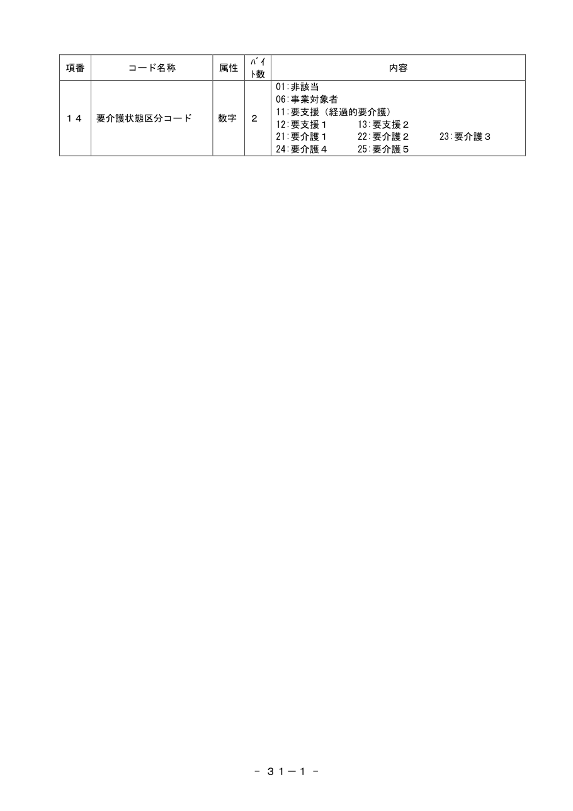
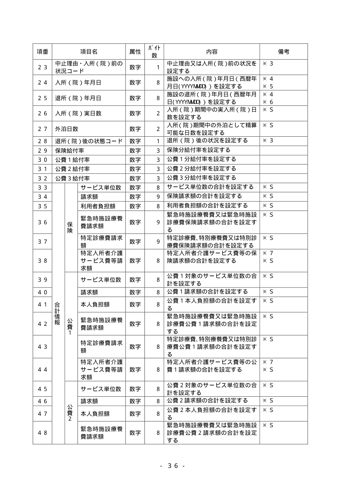
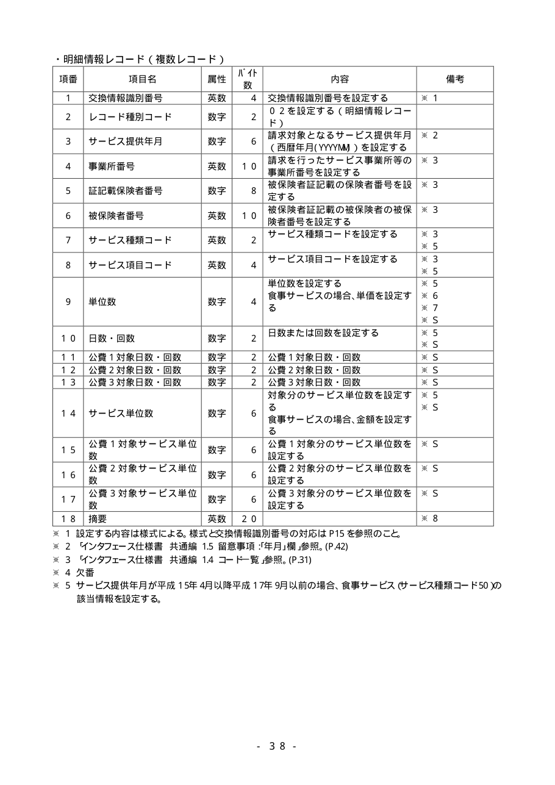
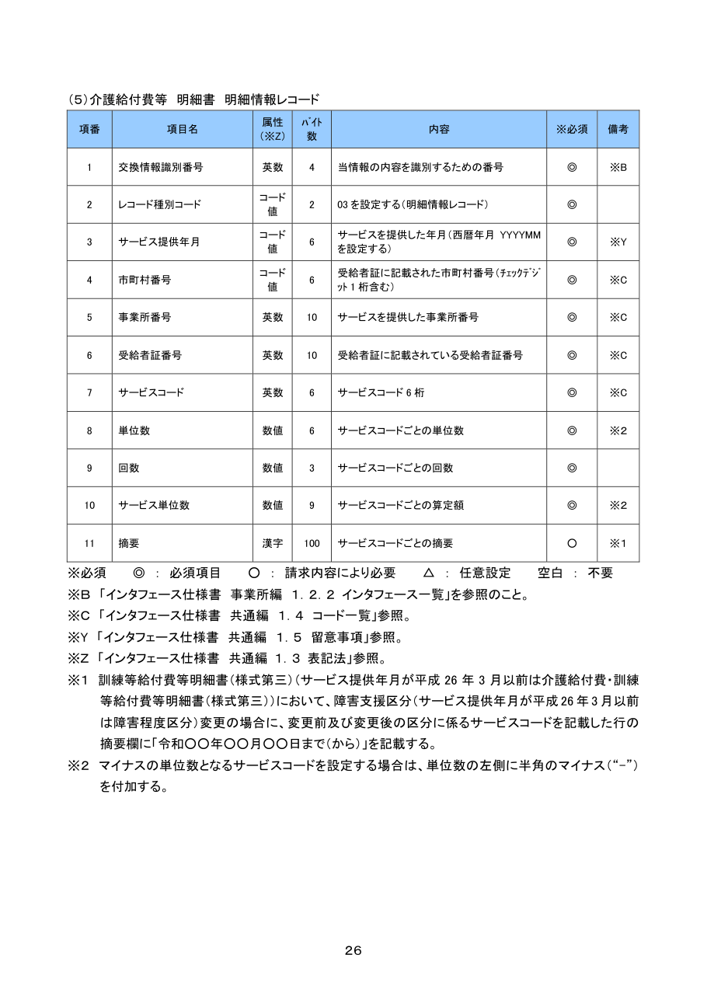
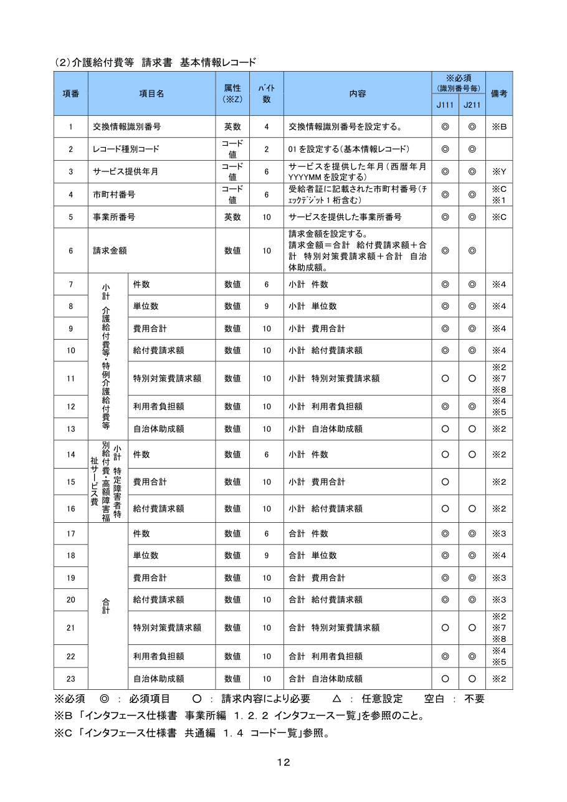
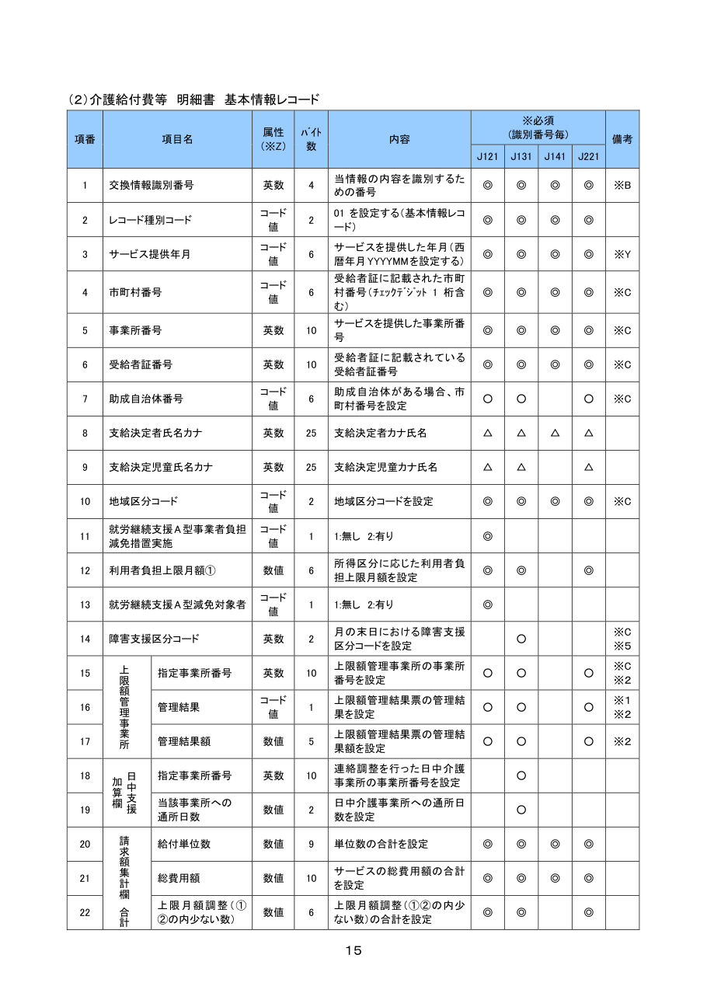
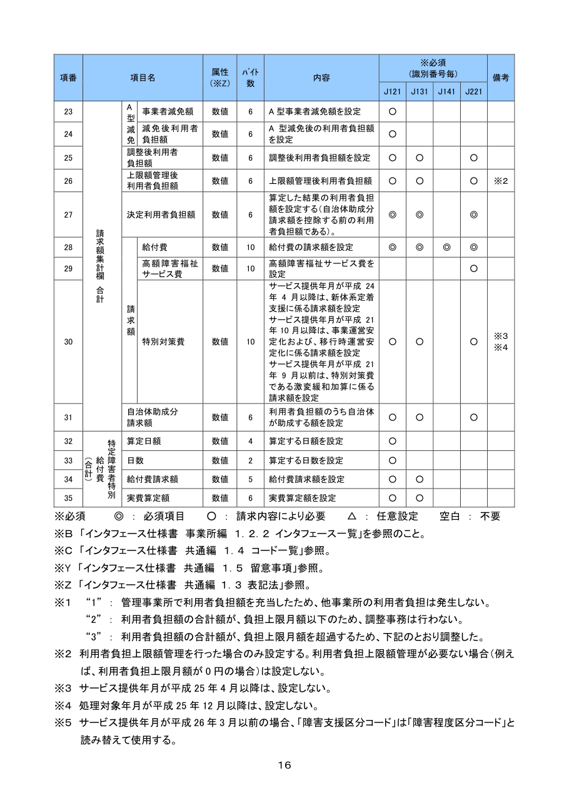

モデル間で食い違い（マウスオーバーで相手の値）PDFテキストレイヤに見つからない自動チェックで警告・エラー片方のモデルにしかない行
| ページ | 種類 | claude-haiku-5-5 | claude-sonnet-5-5 | 食い違い | ||||||||
|---|---|---|---|---|---|---|---|---|---|---|---|---|
| 行数 | error | warn | テキスト不一致 | $ | 行数 | error | warn | テキスト不一致 | $ | セル | ||
| kaigo_kyotsu_r0806_p12 (印字p.8) | 単純 | 7 | 0 | 1 | 0/14 | 0.002024 | 11 | 0 | 1 | 2/22 | 0.03122 | 16 |
| kaigo_kyotsu_r0806_p35 (印字p.31) | セル結合・改ページ分断 | 20 | 1 | 0 | 1/40 | 0.003296 | 20 | 1 | 0 | 0/40 | 0.037424 | 2 |
| kaigo_kyotsu_r0806_p36 (印字p.31-1) | 改ページ分断 | 1 | 0 | 0 | 0/2 | 0.00126 | 1 | 1 | 0 | 0/2 | 0.016944 | 1 |
| kaigo_kyotsu_r0806_p41 (印字p.34) | 改ページ分断・セル結合 | 3 | 0 | 4 | 0/5 | 0.00248 | 3 | 0 | 4 | 0/5 | 0.028396 | 0 |
| kaigo_jigyosho_r0604_p80 (印字p.35) | セル結合・改ページ分断 | 22 | 0 | 19 | 0/65 | 0.003066 | 22 | 0 | 19 | 0/65 | 0.039856 | 6 |
| kaigo_jigyosho_r0604_p81 (印字p.36) | セル結合・改ページ分断 | 26 | 0 | 26 | 0/74 | 0.004125 | 26 | 0 | 26 | 0/74 | 0.044788 | 2 |
| kaigo_jigyosho_r0604_p84 (印字p.38) | 単純 | 18 | 0 | 15 | 0/52 | 0.003283 | 18 | 0 | 15 | 0/52 | 0.03673 | 1 |
| kaigo_jigyosho_r0604_p110 (印字p.52) | 必須対応表 | 18 | 0 | 18 | 0/18 | 0.002648 | 18 | 0 | 0 | 0/18 | 0.030002 | 2 |
| shogai_jigyosho_r0710_p31 (印字p.26) | 単純 | 11 | 0 | 0 | 0/31 | 0.002287 | 11 | 0 | 0 | 0/31 | 0.031424 | 0 |
| shogai_jigyosho_r0710_p17 (印字p.12) | セル結合 | 23 | 0 | 0 | 0/67 | 0.00375 | 23 | 0 | 0 | 0/67 | 0.0485 | 0 |
| shogai_jigyosho_r0710_p20 (印字p.15) | セル結合・改ページ分断 | 22 | 0 | 0 | 0/55 | 0.004732 | 22 | 0 | 0 | 0/55 | 0.051746 | 2 |
| shogai_jigyosho_r0710_p21 (印字p.16) | セル結合・改ページ分断 | 13 | 0 | 0 | 0/28 | 0.003878 | 13 | 0 | 0 | 0/28 | 0.045842 | 2 |
| shogai_jigyosho_r0710_p90 (印字p.62-7) | 必須対応表 | 56 | 0 | 0 | 0/56 | 0.015578 | 56 | 0 | 0 | 0/56 | 0.214884 | 6 |
kaigo_kyotsu_r0806_p12 — 印字p.8

claude-haiku-5-5
- 表1 項番3 桁数が空（原文: None）
表1 record_layout・データレコードフォーマット
| 項番 | 項目名 | 属性 | 桁数 | 内容 | 必須 | 備考 |
|---|---|---|---|---|---|---|
| １ | レコード種別 | 数字 | 1 | データレコードを示す 2 を設定 | ||
| ２ | レコード番号（連番） | 数字 | 9 | ファイル内の先頭レコードからの連番（1から始まる通番）を設定 マルチボリュームファイルの場合、マルチボリューム全体での通番となる | ||
| ３ | データ | 交換情報ごとに、CSV 形式でデータを設定 設定する内容は、各交換情報の「項目説明」を参照 | ||||
| ４ | ブランク | 英数 | 2 | 改行（16 進ｺｰﾄﾞ…0x0D0A）を設定 |
表2 record_layout・エンドレコードフォーマット
| 項番 | 項目名 | 属性 | 桁数 | 内容 | 必須 | 備考 |
|---|---|---|---|---|---|---|
| １ | レコード種別 | 数字 | 1 | エンドレコードを示す３を設定 | ||
| ２ | レコード番号（連番） | 数字 | 9 | ファイル内の先頭レコードからの連番（1から始まる通番）を設定 マルチボリュームファイルの場合、マルチボリューム全体での通番となる | ||
| ３ | ブランク | 英数 | 2 | 改行（16 進ｺｰﾄﾞ…0x0D0A）を設定 |
uncertain（モデル自己申告）
- 依頼では PDF 上のページ 12 とあるが、添付画像は印字ページ「- 8 -」の1ページであるため、添付のページを書き起こした。
- 添付ページには「（データ設定例）」以降に、コントロールレコード・データレコード(2レコード目)・エンドレコード(125レコード目)の設定例が図示されている。これらは位置と設定値を並べた図であり表形式の項目説明ではないため、書き起こし対象の表には含めなかった。
- データレコードフォーマット表の見出し「バイト数」の表記、および項番・バイト数の数字の全角・半角は画像から判読したまま記載した。
claude-sonnet-5-5
- 表1 項番3 桁数が空（原文: None）
- テキストレイヤに見つからないセル: 2 個（赤枠）
表1 record_layout・データレコードフォーマット
| 項番 | 項目名 | 属性 | 桁数 | 内容 | 必須 | 備考 |
|---|---|---|---|---|---|---|
| １ | レコード種別 | 数字 | 1 | データレコードを示す 2 を設定 | ||
| ２ | レコード番号（連番） | 数字 | 9 | ファイル内の先頭レコードからの連番（１から始まる通番）を設定 マルチボリュームファイルの場合、マルチボリューム全体での通番となる | ||
| ３ | データ | 交換情報ごとに、CSV 形式でデータを設定 設定する内容は、各交換情報の「項目説明」を参照 | ||||
| ４ | ブランク | 英数 | 2 | 改行（16 進ｺｰﾄﾞ…0x0D0A）を設定 |
表2 record_layout・エンドレコードフォーマット
| 項番 | 項目名 | 属性 | 桁数 | 内容 | 必須 | 備考 |
|---|---|---|---|---|---|---|
| １ | レコード種別 | 数字 | 1 | エンドレコードを示す３を設定 | ||
| ２ | レコード番号（連番） | 数字 | 9 | ファイル内の先頭レコードからの連番（１から始まる通番）を設定 マルチボリュームファイルの場合、マルチボリューム全体での通番となる | ||
| ３ | ブランク | 英数 | 2 | 改行（16 進ｺｰﾄﾞ…0x0D0A）を設定 |
表3 other・コントロールレコード設定例
| 項番 | 項目名 | 属性 | 桁数 | 内容 | 必須 | 備考 |
|---|---|---|---|---|---|---|
| 位置1-40 | 1,1,0,123,999,0,0,1111111111,0,4,200004, | |||||
| 位置41-43 | 1 改行コード |
表4 other・データレコード(2レコード目)設定例
| 項番 | 項目名 | 属性 | 桁数 | 内容 | 必須 | 備考 |
|---|---|---|---|---|---|---|
| 設定値 | 2,2,・・・データを設定・・・ 改行コード |
表5 other・エンドレコード(125レコード目)設定例
| 項番 | 項目名 | 属性 | 桁数 | 内容 | 必須 | 備考 |
|---|---|---|---|---|---|---|
| 設定値 | 3,125 改行コード |
uncertain（モデル自己申告）
- 設定例の表は位置ごとのセルを1行にまとめて書き起こした
kaigo_kyotsu_r0806_p35 — 印字p.31

claude-haiku-5-5
- [改ページ] p35 の最後の表が continues_to_next_page=false
- テキストレイヤに見つからないセル: 1 個（赤枠）
表1 code_list１．４ コード一覧
| 項番 | 項目名 | 属性 | 桁数 | 内容 | 必須 | 備考 |
|---|---|---|---|---|---|---|
| １ | 交換情報識別番号 | 英数 | 4 | 交換情報を識別するための番号 | ||
| ２ | 異動区分コード | 数字 | 1 | 1:新規 2:変更 3:終了 | ||
| ３ | 異動事由 > 受給者異動事由 | 数字 | 2 | 01:受給資格取得 02:受給資格喪失 03:広域連合における受給者の市町村間異動（政令市における受給者の区間異動） 04:合併による新規 99:その他異動 | ||
| ３ | 異動事由 > 事業所異動事由 | 数字 | 2 | 01:固定値（省略可能） | ||
| ３ | 異動事由 > 保険者異動事由 | 数字 | 2 | 01:固定値（省略可能） | ||
| ３ | 異動事由 > 広域連合異動事由 | 数字 | 2 | 01:固定値（省略可能） | ||
| ３ | 異動事由 > 市町村固有情報異動事由 | 数字 | 2 | 01:固定値（省略可能） | ||
| ３ | 異動事由 > 市町村特別給付異動事由 | 数字 | 2 | 01:固定値（省略可能） | ||
| ３ | 異動事由 > 個人番号異動事由 | 数字 | 2 | 01:受給者台帳の異動（新規、区間異動等） 02:個人番号の変更による異動 | ||
| ４ | 訂正区分コード | 数字 | 1 | 1:（未使用） 2:修正 3:削除 | ||
| ５ | 媒体区分コード > 保険者等 | 数字 | 1 | 1:伝送 2:MO 4:FD （5:紙） ※CD-R の場合は「4:FD」を設定 | ||
| ５ | 媒体区分コード > 事業所 | 数字 | 1 | 2:MO 4:FD （5:紙） 1 または 7:伝送（インターネット） ※CD-R の場合は「4:FD」を設定 | ||
| ６ | 保険者番号 | 数字 | 6 | 介護保険の保険者番号 （図：×1 ×2 ×3 ×4 ×5 ×6 の6桁。チェックデジット・市区町村コード・都道府県コードの対応線を示す） ※チェックデジットはモジュラス１０方式とする | ||
| ７ | 証記載保険者番号 | 数字 | 6 | 被保険者証記載の保険者番号 広域連合（政令市）の場合は市町村コード（行政区番号） | ||
| ８ | 市町村コード | 数字 | 3 | 総務省にて定めるコード | ||
| ９ | 年号コード | 数字 | 1 | 1:明治 2:大正 3:昭和 4:平成 5:令和 | ||
| １０ | 保険者区分コード | 数字 | 1 | 1:単独保険者 2:政令市 3:広域連合の保険者 | ||
| １１ | 被保険者番号 | 英数 | 10 | 介護保険の被保険者番号 被保険者証記載の被保険者番号が１０桁に満たない場合は右詰とし、左側を０で埋める 福祉事務所から提供される生活保護受給者については先頭の１桁を“H”とすること | ||
| １２ | 性別コード | 数字 | 1 | 1:男 2:女 | ||
| １３ | みなし要介護区分コード | 数字 | 1 | 1:通常の認定 2:みなし認定（旧措置入所者） 3:やむを得ない事由 |
uncertain（モデル自己申告）
- 添付ページの印字ページ番号は「３１」で、依頼の PDF 上のページ 35 とは一致しない。添付の1ページ（コード一覧）をそのまま書き起こした。
- 項番6の図（×1〜×6と「チェックデジット」「市区町村コード」「都道府県コード」の対応線）は、どの桁がどの項目に対応するかの読み取りに自信がないため、図の内容を文字で要約し、対応は断定していない。
- 項番3の「受給者異動事由」の内容は、03の行が「（政令市における受給者の区間異動）」の箇所で折り返されているが、括弧内で改行を詰めて1文として書き起こした。
claude-sonnet-5-5
- [改ページ] p36 の最初の表が continued_from_prev_page=false
表1 code_list１．４ コード一覧 次頁へ続く
| 項番 | 項目名 | 属性 | 桁数 | 内容 | 必須 | 備考 |
|---|---|---|---|---|---|---|
| １ | 交換情報識別番号 | 英数 | 4 | 交換情報を識別するための番号 | ||
| ２ | 異動区分コード | 数字 | 1 | 1:新規 2:変更 3:終了 | ||
| ３ | 異動事由 > 受給者異動事由 | 数字 | 2 | 01:受給資格取得 02:受給資格喪失 03:広域連合における受給者の市町村間異動（政令市における受給者の区間異動） 04:合併による新規 99:その他異動 | ||
| ３ | 異動事由 > 事業所異動事由 | 数字 | 2 | 01:固定値（省略可能） | ||
| ３ | 異動事由 > 保険者異動事由 | 数字 | 2 | 01:固定値（省略可能） | ||
| ３ | 異動事由 > 広域連合異動事由 | 数字 | 2 | 01:固定値（省略可能） | ||
| ３ | 異動事由 > 市町村固有情報異動事由 | 数字 | 2 | 01:固定値（省略可能） | ||
| ３ | 異動事由 > 市町村特別給付異動事由 | 数字 | 2 | 01:固定値（省略可能） | ||
| ３ | 異動事由 > 個人番号異動事由 | 数字 | 2 | 01:受給者台帳の異動（新規、区間異動等） 02:個人番号の変更による異動 | ||
| ４ | 訂正区分コード | 数字 | 1 | 1:（未使用） 2:修正 3:削除 | ||
| ５ | 媒体区分コード > 保険者等 | 数字 | 1 | 1:伝送 2:MO 4:FD （5:紙） ※CD-R の場合は「4:FD」を設定 | ||
| ５ | 媒体区分コード > 事業所 | 数字 | 1 | 2:MO 4:FD （5:紙） 1 または 7:伝送（インターネット） ※CD-R の場合は「4:FD」を設定 | ||
| ６ | 保険者番号 | 数字 | 6 | 介護保険の保険者番号 ×１ ×２ ×３ ×４ ×５ ×６ チェックデジット 市区町村コード 都道府県コード ※チェックデジットはモジュラス１０方式とする | ||
| ７ | 証記載保険者番号 | 数字 | 6 | 被保険者証記載の保険者番号 広域連合（政令市）の場合は市町村コード（行政区番号） | ||
| ８ | 市町村コード | 数字 | 3 | 総務省にて定めるコード | ||
| ９ | 年号コード | 数字 | 1 | 1:明治 2:大正 3:昭和 4:平成 5:令和 | ||
| １０ | 保険者区分コード | 数字 | 1 | 1:単独保険者 2:政令市 3:広域連合の保険者 | ||
| １１ | 被保険者番号 | 英数 | 10 | 介護保険の被保険者番号 被保険者証記載の被保険者番号が１０桁に満たない場合は右詰とし、左側を０で埋める 福祉事務所から提供される生活保護受給者については先頭の１桁を“H”とすること | ||
| １２ | 性別コード | 数字 | 1 | 1:男 2:女 | ||
| １３ | みなし要介護区分コード | 数字 | 1 | 1:通常の認定 2:みなし認定（旧措置入所者） 3:やむを得ない事由 |
uncertain（モデル自己申告）
- 項番6の内容は図（×１〜×６の枠と矢印）をテキスト化したもの
- 項番3の04の行末に空白あり
kaigo_kyotsu_r0806_p36 — 印字p.31-1

claude-haiku-5-5
表1 code_list 前頁から続く
| 項番 | 項目名 | 属性 | 桁数 | 内容 | 必須 | 備考 |
|---|---|---|---|---|---|---|
| １４ | 要介護状態区分コード | 数字 | 2 | 01:非該当 06:事業対象者 11:要支援（経過的要介護） 12:要支援１ 13:要支援２ 21:要介護１ 22:要介護２ 23:要介護３ 24:要介護４ 25:要介護５ |
uncertain（モデル自己申告）
- 添付ページの印字ページ番号は「３１－１」であり、依頼文の PDF 上のページ 36 と一致しない。添付された1ページを書き起こした。
- この表は見出し行から始まるが項番14のみで、前ページからの続きと判断して continued_from_prev_page を true にした。前ページ側の内容は確認できない。
claude-sonnet-5-5
- 表1 前ページからの続きではないのに項番が 14 から始まる
表1 code_list
| 項番 | 項目名 | 属性 | 桁数 | 内容 | 必須 | 備考 |
|---|---|---|---|---|---|---|
| １４ | 要介護状態区分コード | 数字 | 2 | 01:非該当 06:事業対象者 11:要支援（経過的要介護） 12:要支援１ 13:要支援２ 21:要介護１ 22:要介護２ 23:要介護３ 24:要介護４ 25:要介護５ |
uncertain（モデル自己申告）
- 表の見出し行がありタイトルは無いが、項番14から始まるため前ページからの続きの可能性あり（見出し行が付いているため false とした）
kaigo_kyotsu_r0806_p41 — 印字p.34

claude-haiku-5-5
- 表1 項番が整数でない行が 3 行
- 表1 桁数が空（原文: None）
- 表1 桁数が空（原文: None）
- 表1 桁数が空（原文: None）
表1 code_list 前頁から続く
| 項番 | 項目名 | 属性 | 桁数 | 内容 | 必須 | 備考 |
|---|---|---|---|---|---|---|
| 75:介護予防小規模多機能型居宅介護 76:定期巡回・随時対応型訪問介護看護 77:複合型サービス（看護小規模多機能型居宅介護） 78:地域密着型通所介護 79:複合型サービス（看護小規模多機能型居宅介護・短期利用型） 81:市町村特別給付 | ||||||
| 介護予防・日常生活支援総合事業サービス（経過措置） | 40:ケアマネジメント 47:生活支援サービス（配食） 48:生活支援サービス（見守り） 49:生活支援サービス（その他） 82:訪問型予防サービス 83:通所型予防サービス 84:介護予防訪問入浴介護 85:介護予防訪問看護 86:介護予防訪問リハビリテーション 87:介護予防通所リハビリテーション 88:介護予防福祉用具貸与 89:介護予防短期入所生活介護 90:介護予防短期入所療養介護（介護老人保健施設） 91:介護予防短期入所療養介護（介護療養型医療施設等） 92:介護予防居宅療養管理指導 93:介護予防特定施設入居者生活介護 94:介護予防認知症対応型通所介護 95:介護予防小規模多機能型居宅介護 96:介護予防認知症対応型共同生活介護 97:介護予防認知症対応型共同生活介護（短期利用型） | |||||
| 介護予防・日常生活支援総合事業サービス | A1:訪問型サービス（みなし） A2:訪問型サービス（独自） A3:訪問型サービス（独自／定率） A4:訪問型サービス（独自／定額） A5:通所型サービス（みなし） A6:通所型サービス（独自） A7:通所型サービス（独自／定率） A8:通所型サービス（独自／定額） A9:その他の生活支援サービス（配食／定率） AA:その他の生活支援サービス（配食／定額） AB:その他の生活支援サービス（見守り／定率） AC:その他の生活支援サービス（見守り／定額） AD:その他の生活支援サービス（その他／定率） AE:その他の生活支援サービス（その他／定額） AF:介護予防ケアマネジメント |
注記
- ※ 「みなし」：総合事業のみなし指定
- ※ 「独自」：市町村が独自にサービスを設定するもの
- ※ 「定率」：利用者負担が定率のもの
- ※ 「定額」：利用者負担が定額のもの
uncertain（モデル自己申告）
- 依頼はPDF上のページ41の書き起こしでしたが、添付の画像はページ下部に「- ３４ -」と印字された1ページ（印刷ページ34）であり、添付内容に基づいて書き起こしました。
- 項番・コード名称・属性・バイト数の列は上段の行（75〜81）で空欄になっており、1行目の群に対応する項番や縦見出しが添付ページに見えないため、name_pathを空配列としました。前ページからの続きと判断しています。
- 項番・コード名称の縦結合の対応を画像から判断しており、40〜97の群と A1〜AF の群の見出しはそれぞれ縦書きラベルから読み取りました。
- 内容セル内の注記枠（※ 4件）は内容ではなく注記として footnotes に入れ、contentには含めていません。
claude-sonnet-5-5
- 表1 項番が整数でない行が 3 行
- 表1 桁数が空（原文: None）
- 表1 桁数が空（原文: None）
- 表1 桁数が空（原文: None）
表1 code_list 前頁から続く
| 項番 | 項目名 | 属性 | 桁数 | 内容 | 必須 | 備考 |
|---|---|---|---|---|---|---|
| 75:介護予防小規模多機能型居宅介護 76:定期巡回・随時対応型訪問介護看護 77:複合型サービス（看護小規模多機能型居宅介護） 78:地域密着型通所介護 79:複合型サービス（看護小規模多機能型居宅介護・短期利用型） 81:市町村特別給付 | ||||||
| 介護予防・日常生活支援総合事業サービス（経過措置） | 40:ケアマネジメント 47:生活支援サービス（配食） 48:生活支援サービス（見守り） 49:生活支援サービス（その他） 82:訪問型予防サービス 83:通所型予防サービス 84:介護予防訪問入浴介護 85:介護予防訪問看護 86:介護予防訪問リハビリテーション 87:介護予防通所リハビリテーション 88:介護予防福祉用具貸与 89:介護予防短期入所生活介護 90:介護予防短期入所療養介護（介護老人保健施設） 91:介護予防短期入所療養介護（介護療養型医療施設等） 92:介護予防居宅療養管理指導 93:介護予防特定施設入居者生活介護 94:介護予防認知症対応型通所介護 95:介護予防小規模多機能型居宅介護 96:介護予防認知症対応型共同生活介護 97:介護予防認知症対応型共同生活介護（短期利用型） | |||||
| 介護予防・日常生活支援総合事業サービス | A1:訪問型サービス（みなし） A2:訪問型サービス（独自） A3:訪問型サービス（独自／定率） A4:訪問型サービス（独自／定額） A5:通所型サービス（みなし） A6:通所型サービス（独自） A7:通所型サービス（独自／定率） A8:通所型サービス（独自／定額） A9:その他の生活支援サービス（配食／定率） AA:その他の生活支援サービス（配食／定額） AB:その他の生活支援サービス（見守り／定率） AC:その他の生活支援サービス（見守り／定額） AD:その他の生活支援サービス（その他／定率） AE:その他の生活支援サービス（その他／定額） AF:介護予防ケアマネジメント |
注記
- ※ 「みなし」：総合事業のみなし指定
- ※ 「独自」：市町村が独自にサービスを設定するもの
- ※ 「定率」：利用者負担が定率のもの
- ※ 「定額」：利用者負担が定額のもの
uncertain（モデル自己申告）
- 前ページからの続き。項番・コード名称・属性・バイト数は空欄で、どのコードの内容か不明
- 1つ目の行は内容の途中から始まる（前ページからの続き）
- ページ末尾で表が終わるか判断できないため、continues_to_next_pageはfalseとした
kaigo_jigyosho_r0604_p80 — 印字p.35

claude-haiku-5-5
- 表1 項番1 桁数が空（原文: None）
- 表1 項番2 桁数が空（原文: None）
- 表1 項番3 桁数が空（原文: None）
- 表1 項番5 桁数が空（原文: None）
- 表1 項番7 桁数が空（原文: None）
- 表1 項番8 桁数が空（原文: None）
- 表1 項番9 桁数が空（原文: None）
- 表1 項番10 桁数が空（原文: None）
- 表1 項番11 桁数が空（原文: None）
- 表1 項番12 桁数が空（原文: None）
- 表1 項番13 桁数が空（原文: None）
- 表1 項番14 桁数が空（原文: None）
- 表1 項番15 桁数が空（原文: None）
- 表1 項番16 桁数が空（原文: None）
- 表1 項番17 桁数が空（原文: None）
- 表1 項番18 桁数が空（原文: None）
- 表1 項番19 桁数が空（原文: None）
- 表1 項番21 桁数が空（原文: None）
- 表1 項番22 桁数が空（原文: None）
- [改ページ] p80→p81 の連続性 OK
表1 record_layout基本情報レコード 次頁へ続く
| 項番 | 項目名 | 属性 | 桁数 | 内容 | 必須 | 備考 |
|---|---|---|---|---|---|---|
| １ | 交換情報識別番号 | 英数 | 交換情報識別番号を設定する | ※１ | ||
| ２ | レコード種別コード | 数字 | ０１を設定する（基本情報レコード） | |||
| ３ | サービス提供年月 | 数字 | 請求対象となるサービス提供年月（西暦年月(YYYYMM)）を設定する | ※２ | ||
| ４ | 事業所番号 | 英数 | 10 | 請求を行ったサービス事業所等の事業所番号を設定する | ※３ | |
| ５ | 証記載保険者番号 | 数字 | 被保険者証に記載された保険者番号を設定する | ※３ | ||
| ６ | 被保険者番号 | 英数 | 10 | 被保険者証記載の被保険者の被保険者番号を設定する | ※３ | |
| ７ | 負担者番号 | 数字 | 公費１負担対象の場合公費１負担者番号を設定する | ※３ | ||
| ８ | 受給者番号 | 数字 | 公費１負担対象の場合公費１受給者番号を設定する | ※３ | ||
| ９ | 負担者番号 | 数字 | 公費２負担対象の場合公費２負担者番号を設定する | ※３ | ||
| １０ | 受給者番号 | 数字 | 公費２負担対象の場合公費２受給者番号を設定する | ※３ | ||
| １１ | 負担者番号 | 数字 | 公費３負担対象の場合公費３負担者番号を設定する | ※３ | ||
| １２ | 受給者番号 | 数字 | 公費３負担対象の場合公費３受給者番号を設定する | ※３ | ||
| １３ | 生年月日 | 数字 | 被保険者の生年月日（西暦年月日(YYYYMMDD)）を設定する | ※４ | ||
| １４ | 性別コード | 数字 | 被保険者の性別を設定する | ※３ | ||
| １５ | 要介護状態区分コード | 数字 | 要介護状態区分を設定する | ※３ | ||
| １６ | 旧措置入所者特例コード | 数字 | 旧措置入所者特例の有無を設定する | ※３ | ||
| １７ | 認定有効期間 開始年月日 | 数字 | 認定有効期間の開始年月日（西暦年月日(YYYYMMDD)）を設定する | ※４ | ||
| １８ | 認定有効期間 終了年月日 | 数字 | 認定有効期間の終了年月日（西暦年月日(YYYYMMDD)）を設定する | ※４ | ||
| １９ | 居宅サービス計画作成区分コード | 数字 | 居宅サービス計画作成者の区分（作成者区分）を設定する | ※３ | ||
| ２０ | 事業所番号（居宅介護支援事業所） | 英数 | 10 | 居宅介護支援事業所番号を設定する | 項番１９が「居宅介護支援事業所作成」又は「介護予防支援事業所・地域包括支援センター作成」のとき必須 | |
| ２１ | 開始年月日 | 数字 | サービス開始年月日（西暦年月日(YYYYMMDD)）を設定する | ※４ | ||
| ２２ | 中止年月日 | 数字 | サービス中止年月日（西暦年月日(YYYYMMDD)）を設定する | ※４ |
uncertain（モデル自己申告）
- ページ下部のページ番号欄は空欄に見えたため、printed_page はページ上部の「３５」を採用した。
- 項番7〜12の負担者番号・受給者番号は縦結合の欄（公費1〜3）が画像上に見えるが文字が読めないため、公費区分を name_path に含めていない。
- 項番5の項目名『証記載保険者番号』は原文のまま。前に語が欠けている可能性がある。
- ※1〜※4の注記本文はこのページに含まれていないため footnotes は空。
- 表が最終行（項番22）でページ下端まで続いており、後続項番があると見て continues_to_next_page を true にした。
claude-sonnet-5-5
- 表1 項番1 桁数が空（原文: None）
- 表1 項番2 桁数が空（原文: None）
- 表1 項番3 桁数が空（原文: None）
- 表1 項番5 桁数が空（原文: None）
- 表1 項番7 桁数が空（原文: None）
- 表1 項番8 桁数が空（原文: None）
- 表1 項番9 桁数が空（原文: None）
- 表1 項番10 桁数が空（原文: None）
- 表1 項番11 桁数が空（原文: None）
- 表1 項番12 桁数が空（原文: None）
- 表1 項番13 桁数が空（原文: None）
- 表1 項番14 桁数が空（原文: None）
- 表1 項番15 桁数が空（原文: None）
- 表1 項番16 桁数が空（原文: None）
- 表1 項番17 桁数が空（原文: None）
- 表1 項番18 桁数が空（原文: None）
- 表1 項番19 桁数が空（原文: None）
- 表1 項番21 桁数が空（原文: None）
- 表1 項番22 桁数が空（原文: None）
- [改ページ] p80→p81 の連続性 OK
表1 record_layout・基本情報レコード 次頁へ続く
| 項番 | 項目名 | 属性 | 桁数 | 内容 | 必須 | 備考 |
|---|---|---|---|---|---|---|
| １ | 交換情報識別番号 | 英数 | 交換情報識別番号を設定する | ※１ | ||
| ２ | レコード種別コード | 数字 | ０１を設定する（基本情報レコード） | |||
| ３ | サービス提供年月 | 数字 | 請求対象となるサービス提供年月（西暦年月(YYYYMM)）を設定する | ※２ | ||
| ４ | 事業所番号 | 英数 | 10 | 請求を行ったサービス事業所等の事業所番号を設定する | ※３ | |
| ５ | 証記載保険者番号 | 数字 | 被保険者証に記載された保険者番号を設定する | ※３ | ||
| ６ | 被保険者番号 | 英数 | 10 | 被保険者証記載の被保険者の被保険者番号を設定する | ※３ | |
| ７ | 公費１ > 負担者番号 | 数字 | 公費１負担対象の場合公費１負担者番号を設定する | ※３ | ||
| ８ | 公費１ > 受給者番号 | 数字 | 公費１負担対象の場合公費１受給者番号を設定する | ※３ | ||
| ９ | 公費２ > 負担者番号 | 数字 | 公費２負担対象の場合公費２負担者番号を設定する | ※３ | ||
| １０ | 公費２ > 受給者番号 | 数字 | 公費２負担対象の場合公費２受給者番号を設定する | ※３ | ||
| １１ | 公費３ > 負担者番号 | 数字 | 公費３負担対象の場合公費３負担者番号を設定する | ※３ | ||
| １２ | 公費３ > 受給者番号 | 数字 | 公費３負担対象の場合公費３受給者番号を設定する | ※３ | ||
| １３ | 生年月日 | 数字 | 被保険者の生年月日（西暦年月日(YYYYMMDD)）を設定する | ※４ | ||
| １４ | 性別コード | 数字 | 被保険者の性別を設定する | ※３ | ||
| １５ | 要介護状態区分コード | 数字 | 要介護状態区分を設定する | ※３ | ||
| １６ | 旧措置入所者特例コード | 数字 | 旧措置入所者特例の有無を設定する | ※３ | ||
| １７ | 認定有効期間 開始年月日 | 数字 | 認定有効期間の開始年月日（西暦年月日(YYYYMMDD)）を設定する | ※４ | ||
| １８ | 認定有効期間 終了年月日 | 数字 | 認定有効期間の終了年月日（西暦年月日(YYYYMMDD)）を設定する | ※４ | ||
| １９ | 居宅サービス計画作成区分コード | 数字 | 居宅サービス計画作成者の区分（作成者区分）を設定する | ※３ | ||
| ２０ | 事業所番号（居宅介護支援事業所） | 英数 | 10 | 居宅介護支援事業所番号を設定する | 項番１９が「居宅介護支援事業所作成」又は「介護予防支援事業所・地域包括支援センター作成」のとき必須 | |
| ２１ | 開始年月日 | 数字 | サービス開始年月日（西暦年月日(YYYYMMDD)）を設定する | ※４ | ||
| ２２ | 中止年月日 | 数字 | サービス中止年月日（西暦年月日(YYYYMMDD)）を設定する | ※４ |
uncertain（モデル自己申告）
- バイト数列は、項番4・6・20以外は数値が抽出テキストに現れず、すべて null としている
- 項番13〜20の項目名の左側にある結合セル（被保険者情報などのグループ見出し）は文字が読み取れず name_path に入れていない
- 項番19と20のグループ見出しの有無が不明
- 必須列がない表と判断した
kaigo_jigyosho_r0604_p81 — 印字p.36

claude-haiku-5-5
- 表1 項番23 桁数が空（原文: None）
- 表1 項番24 桁数が空（原文: None）
- 表1 項番25 桁数が空（原文: None）
- 表1 項番26 桁数が空（原文: None）
- 表1 項番27 桁数が空（原文: None）
- 表1 項番28 桁数が空（原文: None）
- 表1 項番29 桁数が空（原文: None）
- 表1 項番30 桁数が空（原文: None）
- 表1 項番31 桁数が空（原文: None）
- 表1 項番32 桁数が空（原文: None）
- 表1 項番33 桁数が空（原文: None）
- 表1 項番34 桁数が空（原文: None）
- 表1 項番35 桁数が空（原文: None）
- 表1 項番36 桁数が空（原文: None）
- 表1 項番37 桁数が空（原文: None）
- 表1 項番38 桁数が空（原文: None）
- 表1 項番39 桁数が空（原文: None）
- 表1 項番40 桁数が空（原文: None）
- 表1 項番41 桁数が空（原文: None）
- 表1 項番42 桁数が空（原文: None）
- 表1 項番43 桁数が空（原文: None）
- 表1 項番44 桁数が空（原文: None）
- 表1 項番45 桁数が空（原文: None）
- 表1 項番46 桁数が空（原文: None）
- 表1 項番47 桁数が空（原文: None）
- 表1 項番48 桁数が空（原文: None）
表1 record_layout 前頁から続く
| 項番 | 項目名 | 属性 | 桁数 | 内容 | 必須 | 備考 |
|---|---|---|---|---|---|---|
| ２３ | 中止理由・入所（院）前の状況コード | 数字 | 中止理由又は入所（院）前の状況を設定する | ※３ | ||
| ２４ | 入所（院）年月日 | 数字 | 施設への入所（院）年月日（西暦年月日(YYYYMMDD)）を設定する | ※４ ※５ | ||
| ２５ | 退所（院）年月日 | 数字 | 施設の退所（院）年月日（西暦年月日(YYYYMMDD)）を設定する | ※４ ※６ | ||
| ２６ | 入所（院）実日数 | 数字 | 入所（院）期間中の実入所（院）日数を設定する | ※Ｓ | ||
| ２７ | 外泊日数 | 数字 | 入所（院）期間中の外泊として精算可能な日数を設定する | ※Ｓ | ||
| ２８ | 退所（院）後の状態コード | 数字 | 退所（院）後の状況を設定する | ※３ | ||
| ２９ | 保険給付率 | 数字 | 保険分給付率を設定する | |||
| ３０ | 公費１給付率 | 数字 | 公費１分給付率を設定する | |||
| ３１ | 公費２給付率 | 数字 | 公費２分給付率を設定する | |||
| ３２ | 公費３給付率 | 数字 | 公費３分給付率を設定する | |||
| ３３ | サービス単位数 | 数字 | サービス単位数の合計を設定する | ※Ｓ | ||
| ３４ | 合計情報 > 保険 > 請求額 | 数字 | 保険請求額の合計を設定する | ※Ｓ | ||
| ３５ | 合計情報 > 保険 > 利用者負担額 | 数字 | 利用者負担額の合計を設定する | ※Ｓ | ||
| ３６ | 合計情報 > 保険 > 緊急時施設療養費請求額 | 数字 | 緊急時施設療養費又は緊急時施設診療費保険請求額の合計を設定する | ※Ｓ | ||
| ３７ | 合計情報 > 保険 > 特定診療費請求額 | 数字 | 特定診療費、特別療養費又は特別診療費保険請求額の合計を設定する | ※Ｓ | ||
| ３８ | 合計情報 > 保険 > 特定入所者介護サービス費等請求額 | 数字 | 特定入所者介護サービス費等の保険請求額の合計を設定する | ※７ ※Ｓ | ||
| ３９ | 合計情報 > 公費1 > サービス単位数 | 数字 | 公費１対象のサービス単位数の合計を設定する | ※Ｓ | ||
| ４０ | 合計情報 > 公費1 > 請求額 | 数字 | 公費１請求額の合計を設定する | ※Ｓ | ||
| ４１ | 合計情報 > 公費1 > 本人負担額 | 数字 | 公費１本人負担額の合計を設定する | ※Ｓ | ||
| ４２ | 合計情報 > 公費1 > 緊急時施設療養費請求額 | 数字 | 緊急時施設療養費又は緊急時施設診療費公費１請求額の合計を設定する | ※Ｓ | ||
| ４３ | 合計情報 > 公費1 > 特定診療費請求額 | 数字 | 特定診療費、特別療養費又は特別診療費公費１請求額の合計を設定する | ※Ｓ | ||
| ４４ | 合計情報 > 公費1 > 特定入所者介護サービス費等請求額 | 数字 | 特定入所者介護サービス費等の公費１請求額の合計を設定する | ※７ ※Ｓ | ||
| ４５ | 合計情報 > 公費2 > サービス単位数 | 数字 | 公費２対象のサービス単位数の合計を設定する | ※Ｓ | ||
| ４６ | 合計情報 > 公費2 > 請求額 | 数字 | 公費２請求額の合計を設定する | ※Ｓ | ||
| ４７ | 合計情報 > 公費2 > 本人負担額 | 数字 | 公費２本人負担額の合計を設定する | ※Ｓ | ||
| ４８ | 合計情報 > 公費2 > 緊急時施設療養費請求額 | 数字 | 緊急時施設療養費又は緊急時施設診療費公費２請求額の合計を設定する | ※Ｓ |
uncertain（モデル自己申告）
- このページは前ページからの続きで、表見出し・列見出し・レコード名は読み取れない（columnsは一般的な列構成で補ったものではなく、列見出しが無いため空に近い扱いが必要）。
- バイト数列の値が画像・テキストともに読み取れず、length と length_raw をすべて null にした。
- name_path の「合計情報」「保険」「公費1」「公費2」の階層は、画像の縦結合罫線の位置から推定した。項番33の直後から始まる結合範囲に基づく判断であり、見出し文字が無いため確認が必要。
- 前ページからの続きのため、表のレコード名・交換情報識別番号・上位情報名（介護給付費等 明細書など）は確認できず null とした。
- ページ番号は画像上「- ３６ -」と読めたため printed_page を３６とした。PDF上のページ番号81とは異なる。
claude-sonnet-5-5
- 表1 項番23 桁数が空（原文: None）
- 表1 項番24 桁数が空（原文: None）
- 表1 項番25 桁数が空（原文: None）
- 表1 項番26 桁数が空（原文: None）
- 表1 項番27 桁数が空（原文: None）
- 表1 項番28 桁数が空（原文: None）
- 表1 項番29 桁数が空（原文: None）
- 表1 項番30 桁数が空（原文: None）
- 表1 項番31 桁数が空（原文: None）
- 表1 項番32 桁数が空（原文: None）
- 表1 項番33 桁数が空（原文: None）
- 表1 項番34 桁数が空（原文: None）
- 表1 項番35 桁数が空（原文: None）
- 表1 項番36 桁数が空（原文: None）
- 表1 項番37 桁数が空（原文: None）
- 表1 項番38 桁数が空（原文: None）
- 表1 項番39 桁数が空（原文: None）
- 表1 項番40 桁数が空（原文: None）
- 表1 項番41 桁数が空（原文: None）
- 表1 項番42 桁数が空（原文: None）
- 表1 項番43 桁数が空（原文: None）
- 表1 項番44 桁数が空（原文: None）
- 表1 項番45 桁数が空（原文: None）
- 表1 項番46 桁数が空（原文: None）
- 表1 項番47 桁数が空（原文: None）
- 表1 項番48 桁数が空（原文: None）
表1 record_layout 前頁から続く次頁へ続く
| 項番 | 項目名 | 属性 | 桁数 | 内容 | 必須 | 備考 |
|---|---|---|---|---|---|---|
| ２３ | 中止理由・入所（院）前の状況コード | 数字 | 中止理由又は入所（院）前の状況を設定する | ※３ | ||
| ２４ | 入所（院）年月日 | 数字 | 施設への入所（院）年月日（西暦年月日(YYYYMMDD)）を設定する | ※４ ※５ | ||
| ２５ | 退所（院）年月日 | 数字 | 施設の退所（院）年月日（西暦年月日(YYYYMMDD)）を設定する | ※４ ※６ | ||
| ２６ | 入所（院）実日数 | 数字 | 入所（院）期間中の実入所（院）日数を設定する | ※Ｓ | ||
| ２７ | 外泊日数 | 数字 | 入所（院）期間中の外泊として精算可能な日数を設定する | ※Ｓ | ||
| ２８ | 退所（院）後の状態コード | 数字 | 退所（院）後の状況を設定する | ※３ | ||
| ２９ | 保険給付率 | 数字 | 保険分給付率を設定する | |||
| ３０ | 公費１給付率 | 数字 | 公費１分給付率を設定する | |||
| ３１ | 公費２給付率 | 数字 | 公費２分給付率を設定する | |||
| ３２ | 公費３給付率 | 数字 | 公費３分給付率を設定する | |||
| ３３ | 合計情報 > 保険 > サービス単位数 | 数字 | サービス単位数の合計を設定する | ※Ｓ | ||
| ３４ | 合計情報 > 保険 > 請求額 | 数字 | 保険請求額の合計を設定する | ※Ｓ | ||
| ３５ | 合計情報 > 保険 > 利用者負担額 | 数字 | 利用者負担額の合計を設定する | ※Ｓ | ||
| ３６ | 合計情報 > 保険 > 緊急時施設療養費請求額 | 数字 | 緊急時施設療養費又は緊急時施設診療費保険請求額の合計を設定する | ※Ｓ | ||
| ３７ | 合計情報 > 保険 > 特定診療費請求額 | 数字 | 特定診療費、特別療養費又は特別診療費保険請求額の合計を設定する | ※Ｓ | ||
| ３８ | 合計情報 > 保険 > 特定入所者介護サービス費等請求額 | 数字 | 特定入所者介護サービス費等の保険請求額の合計を設定する | ※７ ※Ｓ | ||
| ３９ | 合計情報 > 公費１ > サービス単位数 | 数字 | 公費１対象のサービス単位数の合計を設定する | ※Ｓ | ||
| ４０ | 合計情報 > 公費１ > 請求額 | 数字 | 公費１請求額の合計を設定する | ※Ｓ | ||
| ４１ | 合計情報 > 公費１ > 本人負担額 | 数字 | 公費１本人負担額の合計を設定する | ※Ｓ | ||
| ４２ | 合計情報 > 公費１ > 緊急時施設療養費請求額 | 数字 | 緊急時施設療養費又は緊急時施設診療費公費１請求額の合計を設定する | ※Ｓ | ||
| ４３ | 合計情報 > 公費１ > 特定診療費請求額 | 数字 | 特定診療費、特別療養費又は特別診療費公費１請求額の合計を設定する | ※Ｓ | ||
| ４４ | 合計情報 > 公費１ > 特定入所者介護サービス費等請求額 | 数字 | 特定入所者介護サービス費等の公費１請求額の合計を設定する | ※７ ※Ｓ | ||
| ４５ | 合計情報 > 公費２ > サービス単位数 | 数字 | 公費２対象のサービス単位数の合計を設定する | ※Ｓ | ||
| ４６ | 合計情報 > 公費２ > 請求額 | 数字 | 公費２請求額の合計を設定する | ※Ｓ | ||
| ４７ | 合計情報 > 公費２ > 本人負担額 | 数字 | 公費２本人負担額の合計を設定する | ※Ｓ | ||
| ４８ | 合計情報 > 公費２ > 緊急時施設療養費請求額 | 数字 | 緊急時施設療養費又は緊急時施設診療費公費２請求額の合計を設定する | ※Ｓ |
uncertain（モデル自己申告）
- バイト数列の値が抽出テキストになく画像でも読み取れないため、全項目でlengthをnullにした
- 合計情報の階層（合計情報・保険・公費１・公費２）は罫線の構造から推定した。見出し文字は画像上では読めない
- 前ページからの続きの表で見出し行が繰り返されている
kaigo_jigyosho_r0604_p84 — 印字p.38

claude-haiku-5-5
- 表1 項番1 桁数が空（原文: None）
- 表1 項番2 桁数が空（原文: None）
- 表1 項番3 桁数が空（原文: None）
- 表1 項番5 桁数が空（原文: None）
- 表1 項番7 桁数が空（原文: None）
- 表1 項番8 桁数が空（原文: None）
- 表1 項番9 桁数が空（原文: None）
- 表1 項番10 桁数が空（原文: None）
- 表1 項番11 桁数が空（原文: None）
- 表1 項番12 桁数が空（原文: None）
- 表1 項番13 桁数が空（原文: None）
- 表1 項番14 桁数が空（原文: None）
- 表1 項番15 桁数が空（原文: None）
- 表1 項番16 桁数が空（原文: None）
- 表1 項番17 桁数が空（原文: None）
表1 record_layout・明細情報レコード（複数レコード）
| 項番 | 項目名 | 属性 | 桁数 | 内容 | 必須 | 備考 |
|---|---|---|---|---|---|---|
| １ | 交換情報識別番号 | 英数 | 交換情報識別番号を設定する | ※１ | ||
| ２ | レコード種別コード | 数字 | ０２を設定する（明細情報レコード） | |||
| ３ | サービス提供年月 | 数字 | 請求対象となるサービス提供年月（西暦年月(YYYYMM)）を設定する | ※２ | ||
| ４ | 事業所番号 | 英数 | 10 | 請求を行ったサービス事業所等の事業所番号を設定する | ※３ | |
| ５ | 証記載保険者番号 | 数字 | 被保険者証記載の保険者番号を設定する | ※３ | ||
| ６ | 被保険者番号 | 英数 | 10 | 被保険者証記載の被保険者の被保険者番号を設定する | ※３ | |
| ７ | サービス種類コード | 英数 | サービス種類コードを設定する | ※３ ※５ | ||
| ８ | サービス項目コード | 英数 | サービス項目コードを設定する | ※３ ※５ | ||
| ９ | 単位数 | 数字 | 単位数を設定する 食事サービスの場合、単価を設定する | ※５ ※６ ※７ ※Ｓ | ||
| １０ | 日数・回数 | 数字 | 日数または回数を設定する | ※５ ※Ｓ | ||
| １１ | 公費１対象日数・回数 | 数字 | 公費１対象日数・回数 | ※Ｓ | ||
| １２ | 公費２対象日数・回数 | 数字 | 公費２対象日数・回数 | ※Ｓ | ||
| １３ | 公費３対象日数・回数 | 数字 | 公費３対象日数・回数 | ※Ｓ | ||
| １４ | サービス単位数 | 数字 | 対象分のサービス単位数を設定する 食事サービスの場合、金額を設定する | ※５ ※Ｓ | ||
| １５ | 公費１対象サービス単位数 | 数字 | 公費１対象分のサービス単位数を設定する | ※Ｓ | ||
| １６ | 公費２対象サービス単位数 | 数字 | 公費２対象分のサービス単位数を設定する | ※Ｓ | ||
| １７ | 公費３対象サービス単位数 | 数字 | 公費３対象分のサービス単位数を設定する | ※Ｓ | ||
| １８ | 摘要 | 英数 | 20 | ※８ |
注記
- ※１ 設定する内容は様式による。様式と交換情報識別番号の対応は P15 を参照のこと。
- ※２ 「インタフェース仕様書 共通編 1.5 留意事項：｢年月｣欄」参照。(P.42)
- ※３ 「インタフェース仕様書 共通編 1.4 コード一覧」参照。(P.31)
- ※４ 欠番
- ※５ サービス提供年月が平成１５年４月以降平成１７年９月以前の場合、食事サービス（サービス種類コード 50）の該当情報を設定する。
uncertain（モデル自己申告）
- ページ上部に「- ３８ -」と印字されているが、下部のページ番号欄は読み取れなかったため printed_page を null にした。
- 項番5の項目名が「証記載保険者番号」と読める（原文どおり）。「被保険者証記載」の一部が欠けている可能性がある。
- 備考欄の※記号（※１、※２、※３、※５、※６、※７、※Ｓ、※８）の配置が画像からは明確でなく、どの行の備考に属するか（特に項番7〜9、14）は推定を含む。
- 項番18の内容セルは空に見えるが、※８の位置が備考か内容かは判然としない。
- ※４は欠番のため本文の脚注として「欠番」を記録した。
claude-sonnet-5-5
- 表1 項番1 桁数が空（原文: None）
- 表1 項番2 桁数が空（原文: None）
- 表1 項番3 桁数が空（原文: None）
- 表1 項番5 桁数が空（原文: None）
- 表1 項番7 桁数が空（原文: None）
- 表1 項番8 桁数が空（原文: None）
- 表1 項番9 桁数が空（原文: None）
- 表1 項番10 桁数が空（原文: None）
- 表1 項番11 桁数が空（原文: None）
- 表1 項番12 桁数が空（原文: None）
- 表1 項番13 桁数が空（原文: None）
- 表1 項番14 桁数が空（原文: None）
- 表1 項番15 桁数が空（原文: None）
- 表1 項番16 桁数が空（原文: None）
- 表1 項番17 桁数が空（原文: None）
表1 record_layout・明細情報レコード（複数レコード） 次頁へ続く
| 項番 | 項目名 | 属性 | 桁数 | 内容 | 必須 | 備考 |
|---|---|---|---|---|---|---|
| １ | 交換情報識別番号 | 英数 | 交換情報識別番号を設定する | ※１ | ||
| ２ | レコード種別コード | 数字 | ０２を設定する（明細情報レコード） | |||
| ３ | サービス提供年月 | 数字 | 請求対象となるサービス提供年月（西暦年月(YYYYMM)）を設定する | ※２ | ||
| ４ | 事業所番号 | 英数 | 10 | 請求を行ったサービス事業所等の事業所番号を設定する | ※３ | |
| ５ | 証記載保険者番号 | 数字 | 被保険者証記載の保険者番号を設定する | ※３ | ||
| ６ | 被保険者番号 | 英数 | 10 | 被保険者証記載の被保険者の被保険者番号を設定する | ※３ | |
| ７ | サービス種類コード | 英数 | サービス種類コードを設定する | ※３ ※５ | ||
| ８ | サービス項目コード | 英数 | サービス項目コードを設定する | ※３ ※５ | ||
| ９ | 単位数 | 数字 | 単位数を設定する 食事サービスの場合、単価を設定する | ※５ ※６ ※７ ※Ｓ | ||
| １０ | 日数・回数 | 数字 | 日数または回数を設定する | ※５ ※Ｓ | ||
| １１ | 公費１対象日数・回数 | 数字 | 公費１対象日数・回数 | ※Ｓ | ||
| １２ | 公費２対象日数・回数 | 数字 | 公費２対象日数・回数 | ※Ｓ | ||
| １３ | 公費３対象日数・回数 | 数字 | 公費３対象日数・回数 | ※Ｓ | ||
| １４ | サービス単位数 | 数字 | 対象分のサービス単位数を設定する 食事サービスの場合、金額を設定する | ※５ ※Ｓ | ||
| １５ | 公費１対象サービス単位数 | 数字 | 公費１対象分のサービス単位数を設定する | ※Ｓ | ||
| １６ | 公費２対象サービス単位数 | 数字 | 公費２対象分のサービス単位数を設定する | ※Ｓ | ||
| １７ | 公費３対象サービス単位数 | 数字 | 公費３対象分のサービス単位数を設定する | ※Ｓ | ||
| １８ | 摘要 | 英数 | 20 | ※８ |
注記
- １ 設定する内容は様式による。様式と交換情報識別番号の対応は P15 を参照のこと。
- ２ 「インタフェース仕様書 共通編 1.5 留意事項：｢年月｣欄」参照。(P.42)
- ３ 「インタフェース仕様書 共通編 1.4 コード一覧」参照。(P.31)
- ４ 欠番
- ５ サービス提供年月が平成１５年４月以降平成１７年９月以前の場合、食事サービス（サービス種類コード 50）の該当情報を設定する。
uncertain（モデル自己申告）
- バイト数列は多くの行で数値が読み取れず null とした（テキスト抽出に現れていない）
- footnotes の mark は「※」なしの数字で記載されている
- 表は※６以降の注記が次ページに続くと推定し continues_to_next_page を true とした
kaigo_jigyosho_r0604_p110 — 印字p.52

claude-haiku-5-5
- 表1 項番1 桁数が空（原文: None）
- 表1 項番2 桁数が空（原文: None）
- 表1 項番3 桁数が空（原文: None）
- 表1 項番4 桁数が空（原文: None）
- 表1 項番5 桁数が空（原文: None）
- 表1 項番6 桁数が空（原文: None）
- 表1 項番7 桁数が空（原文: None）
- 表1 項番8 桁数が空（原文: None）
- 表1 項番9 桁数が空（原文: None）
- 表1 項番10 桁数が空（原文: None）
- 表1 項番11 桁数が空（原文: None）
- 表1 項番12 桁数が空（原文: None）
- 表1 項番13 桁数が空（原文: None）
- 表1 項番14 桁数が空（原文: None）
- 表1 項番15 桁数が空（原文: None）
- 表1 項番16 桁数が空（原文: None）
- 表1 項番17 桁数が空（原文: None）
- 表1 項番18 桁数が空（原文: None）
表1 record_layout明細情報レコード（複数レコード）
| 項番 | 項目名 | 属性 | 桁数 | 内容 | 必須 | 備考 |
|---|---|---|---|---|---|---|
| １ | 交換情報識別番号 | |||||
| ２ | レコード種別コード | |||||
| ３ | サービス提供年月 | |||||
| ４ | 事業所番号 | ◎ | ||||
| ５ | 証記載保険者番号 | |||||
| ６ | 被保険者番号 | ◎ | ||||
| ７ | サービス種類コード | |||||
| ８ | サービス項目コード | |||||
| ９ | 単位数 | ◎ | ||||
| １０ | 日数・回数 | ◎ | ||||
| １１ | 公費１対象日数・回数 | |||||
| １２ | 公費２対象日数・回数 | |||||
| １３ | 公費３対象日数・回数 | |||||
| １４ | サービス単位数 | ◎ | ||||
| １５ | 公費１対象サービス単位数 | |||||
| １６ | 公費２対象サービス単位数 | |||||
| １７ | 公費３対象サービス単位数 | |||||
| １８ | 摘要 | ○ |
注記
- 凡例 ◎…必須項目 ○…請求内容により設定する項目 空白…設定不要
uncertain（モデル自己申告）
- ページ上部に「- ５２ -」と読める表記があるが、下部のページ番号は判読できなかったため、printed_page は上部の表記を採用した。
- 表の列見出し（項目名以外の12列）は画像上で空欄のため、列名を特定できず仮の名称にした。各セルの値も空欄に見えた。
- 項番18の下の行の「…」は表の省略を示すと思われるが、表が次ページに続くかは判断できなかったため continues_to_next_page は false とした。
- 項番11〜13 の「公 費 １ 対 象 日 数・回数」は原文の字間を詰めて記載した。
claude-sonnet-5-5
表1 required_matrix明細情報レコード（複数レコード）
| 項番 | 項目名 | 属性 | 桁数 | 内容 | 必須 | 備考 |
|---|---|---|---|---|---|---|
| １ | 交換情報識別番号 | |||||
| ２ | レコード種別コード | |||||
| ３ | サービス提供年月 | |||||
| ４ | 事業所番号 | ◎ | ||||
| ５ | 証記載保険者番号 | |||||
| ６ | 被保険者番号 | ◎ | ||||
| ７ | サービス種類コード | |||||
| ８ | サービス項目コード | |||||
| ９ | 単位数 | ◎ | ||||
| １０ | 日数・回数 | ◎ | ||||
| １１ | 公費１対象日数・回数 | |||||
| １２ | 公費２対象日数・回数 | |||||
| １３ | 公費３対象日数・回数 | |||||
| １４ | サービス単位数 | ◎ | ||||
| １５ | 公費１対象サービス単位数 | |||||
| １６ | 公費２対象サービス単位数 | |||||
| １７ | 公費３対象サービス単位数 | |||||
| １８ | 摘要 | ○ |
注記
- 凡例 ◎…必須項目 ○…請求内容により設定する項目 空白…設定不要
uncertain（モデル自己申告）
- 表は横向きページで、縦書きの列見出し（様式・識別番号等）が抽出テキストに含まれず判読不能。columnsは不完全。
- 各項目の◎○が実際にどの列（様式）に属するか不明のため、記号は暫定的にrequiredへ入れた。他の様式列の記号は読み取れない。
- 備考列の内容は空または不明。
- 「…」が表下部に見えるが意味不明。
shogai_jigyosho_r0710_p31 — 印字p.26

claude-haiku-5-5
表1 record_layout(5)介護給付費等 明細書 明細情報レコード
| 項番 | 項目名 | 属性 | 桁数 | 内容 | 必須 | 備考 |
|---|---|---|---|---|---|---|
| 1 | 交換情報識別番号 | 英数 | 4 | 当情報の内容を識別するための番号 | ◎ | ※B |
| 2 | レコード種別コード | コード値 | 2 | 03を設定する（明細情報レコード） | ◎ | |
| 3 | サービス提供年月 | コード値 | 6 | サービスを提供した年月（西暦年月 YYYYMMを設定する） | ◎ | ※Y |
| 4 | 市町村番号 | コード値 | 6 | 受給者証に記載された市町村番号（ﾁｪｯｸﾃﾞｼﾞｯﾄ 1 桁含む） | ◎ | ※C |
| 5 | 事業所番号 | 英数 | 10 | サービスを提供した事業所番号 | ◎ | ※C |
| 6 | 受給者証番号 | 英数 | 10 | 受給者証に記載されている受給者証番号 | ◎ | ※C |
| 7 | サービスコード | 英数 | 6 | サービスコード 6 桁 | ◎ | ※C |
| 8 | 単位数 | 数値 | 6 | サービスコードごとの単位数 | ◎ | ※2 |
| 9 | 回数 | 数値 | 3 | サービスコードごとの回数 | ◎ | |
| 10 | サービス単位数 | 数値 | 9 | サービスコードごとの算定額 | ◎ | ※2 |
| 11 | 摘要 | 漢字 | 100 | サービスコードごとの摘要 | ○ | ※1 |
注記
- ※必須 ◎ : 必須項目 ○ : 請求内容により必要 △ : 任意設定 空白 : 不要
- ※Ｂ 「インタフェース仕様書 事業所編 １．２．２ インタフェース一覧」を参照のこと。
- ※Ｃ 「インタフェース仕様書 共通編 １．４ コード一覧」参照。
- ※Y 「インタフェース仕様書 共通編 １．５ 留意事項」参照。
- ※Ｚ 「インタフェース仕様書 共通編 １．３ 表記法」参照。
- ※1 訓練等給付費等明細書（様式第三）（サービス提供年月が平成 26 年 3 月以前は介護給付費・訓練等給付費等明細書（様式第三））において、障害支援区分（サービス提供年月が平成 26 年 3 月以前は障害程度区分）変更の場合に、変更前及び変更後の区分に係るサービスコードを記載した行の摘要欄に「令和○○年○○月○○日まで（から）」を記載する。
- ※2 マイナスの単位数となるサービスコードを設定する場合は、単位数の左側に半角のマイナス（“-”）を付加する。
uncertain（モデル自己申告）
- 依頼文は「次のページ」かつPDF上のページ31、文書は障害福祉（サービス事業所編）とされていたが、添付された1ページは印字ページ番号26で、内容も国保連向け介護給付費等明細書のページであった。添付どおり、このページの表を書き起こした。
- 明細情報レコードの交換情報識別番号の具体的な値は表に記載がないため exchange_id は null とした。
- 「バイト数」列の見出しは画像上では「バイト数」、テキスト層では「ﾊﾞｲﾄ数」と読めた。画像の表記を採用した。
claude-sonnet-5-5
表1 record_layout（５）介護給付費等 明細書 明細情報レコード
| 項番 | 項目名 | 属性 | 桁数 | 内容 | 必須 | 備考 |
|---|---|---|---|---|---|---|
| 1 | 交換情報識別番号 | 英数 | 4 | 当情報の内容を識別するための番号 | ◎ | ※B |
| 2 | レコード種別コード | コード値 | 2 | 03 を設定する（明細情報レコード） | ◎ | |
| 3 | サービス提供年月 | コード値 | 6 | サービスを提供した年月（西暦年月 YYYYMMを設定する） | ◎ | ※Y |
| 4 | 市町村番号 | コード値 | 6 | 受給者証に記載された市町村番号（ﾁｪｯｸﾃﾞｼﾞｯﾄ 1 桁含む） | ◎ | ※C |
| 5 | 事業所番号 | 英数 | 10 | サービスを提供した事業所番号 | ◎ | ※C |
| 6 | 受給者証番号 | 英数 | 10 | 受給者証に記載されている受給者証番号 | ◎ | ※C |
| 7 | サービスコード | 英数 | 6 | サービスコード 6 桁 | ◎ | ※C |
| 8 | 単位数 | 数値 | 6 | サービスコードごとの単位数 | ◎ | ※２ |
| 9 | 回数 | 数値 | 3 | サービスコードごとの回数 | ◎ | |
| 10 | サービス単位数 | 数値 | 9 | サービスコードごとの算定額 | ◎ | ※２ |
| 11 | 摘要 | 漢字 | 100 | サービスコードごとの摘要 | ○ | ※１ |
注記
- ※必須 ◎ ： 必須項目 ○ ： 請求内容により必要 △ ： 任意設定 空白 ： 不要
- ※Ｂ 「インタフェース仕様書 事業所編 １．２．２ インタフェース一覧」を参照のこと。
- ※Ｃ 「インタフェース仕様書 共通編 １．４ コード一覧」参照。
- ※Y 「インタフェース仕様書 共通編 １．５ 留意事項」参照。
- ※Ｚ 「インタフェース仕様書 共通編 １．３ 表記法」参照。
- ※１ 訓練等給付費等明細書（様式第三）（サービス提供年月が平成 26 年 3 月以前は介護給付費・訓練等給付費等明細書（様式第三））において、障害支援区分（サービス提供年月が平成 26 年 3 月以前は障害程度区分）変更の場合に、変更前及び変更後の区分に係るサービスコードを記載した行の摘要欄に「令和○○年○○月○○日まで（から）」を記載する。
- ※２ マイナスの単位数となるサービスコードを設定する場合は、単位数の左側に半角のマイナス（“-”）を付加する。
shogai_jigyosho_r0710_p17 — 印字p.12

claude-haiku-5-5
表1 record_layout（２）介護給付費等 請求書 基本情報レコード
| 項番 | 項目名 | 属性 | 桁数 | 内容 | 必須 | 備考 |
|---|---|---|---|---|---|---|
| 1 | 交換情報識別番号 | 英数 | 4 | 交換情報識別番号を設定する。 | ※必須（識別番号毎） > J111:◎ ※必須（識別番号毎） > J211:◎ | ※B |
| 2 | レコード種別コード | コード値 | 2 | 01 を設定する（基本情報レコード） | ※必須（識別番号毎） > J111:◎ ※必須（識別番号毎） > J211:◎ | |
| 3 | サービス提供年月 | コード値 | 6 | サービスを提供した年月（西暦年月YYYYMM を設定する） | ※必須（識別番号毎） > J111:◎ ※必須（識別番号毎） > J211:◎ | ※Y |
| 4 | 市町村番号 | コード値 | 6 | 受給者証に記載された市町村番号（チェックデジット 1 桁含む） | ※必須（識別番号毎） > J111:◎ ※必須（識別番号毎） > J211:◎ | ※C ※1 |
| 5 | 事業所番号 | 英数 | 10 | サービスを提供した事業所番号 | ※必須（識別番号毎） > J111:◎ ※必須（識別番号毎） > J211:◎ | ※C |
| 6 | 請求金額 | 数値 | 10 | 請求金額を設定する。 請求金額＝合計 給付費請求額＋合計 特別対策費請求額＋合計 自治体助成額。 | ※必須（識別番号毎） > J111:◎ ※必須（識別番号毎） > J211:◎ | |
| 7 | 小計 介護給付費等・特例介護給付費等 > 件数 | 数値 | 6 | 小計 件数 | ※必須（識別番号毎） > J111:◎ ※必須（識別番号毎） > J211:◎ | ※4 |
| 8 | 小計 介護給付費等・特例介護給付費等 > 単位数 | 数値 | 9 | 小計 単位数 | ※必須（識別番号毎） > J111:◎ ※必須（識別番号毎） > J211:◎ | ※4 |
| 9 | 小計 介護給付費等・特例介護給付費等 > 費用合計 | 数値 | 10 | 小計 費用合計 | ※必須（識別番号毎） > J111:◎ ※必須（識別番号毎） > J211:◎ | ※4 |
| 10 | 小計 介護給付費等・特例介護給付費等 > 給付費請求額 | 数値 | 10 | 小計 給付費請求額 | ※必須（識別番号毎） > J111:◎ ※必須（識別番号毎） > J211:◎ | ※4 |
| 11 | 小計 介護給付費等・特例介護給付費等 > 特別対策費請求額 | 数値 | 10 | 小計 特別対策費請求額 | ※必須（識別番号毎） > J111:○ ※必須（識別番号毎） > J211:○ | ※2 ※7 ※8 |
| 12 | 小計 介護給付費等・特例介護給付費等 > 利用者負担額 | 数値 | 10 | 小計 利用者負担額 | ※必須（識別番号毎） > J111:◎ ※必須（識別番号毎） > J211:◎ | ※4 ※5 |
| 13 | 小計 介護給付費等・特例介護給付費等 > 自治体助成額 | 数値 | 10 | 小計 自治体助成額 | ※必須（識別番号毎） > J111:○ ※必須（識別番号毎） > J211:○ | ※2 |
| 14 | 小計 特定障害者特別給付費・高額障害福祉サービス費 > 件数 | 数値 | 6 | 小計 件数 | ※必須（識別番号毎） > J111:○ ※必須（識別番号毎） > J211:○ | ※2 |
| 15 | 小計 特定障害者特別給付費・高額障害福祉サービス費 > 費用合計 | 数値 | 10 | 小計 費用合計 | ※必須（識別番号毎） > J111:○ ※必須（識別番号毎） > J211:－ | ※2 |
| 16 | 小計 特定障害者特別給付費・高額障害福祉サービス費 > 給付費請求額 | 数値 | 10 | 小計 給付費請求額 | ※必須（識別番号毎） > J111:○ ※必須（識別番号毎） > J211:○ | ※2 |
| 17 | 合計 > 件数 | 数値 | 6 | 合計 件数 | ※必須（識別番号毎） > J111:◎ ※必須（識別番号毎） > J211:◎ | ※3 |
| 18 | 合計 > 単位数 | 数値 | 9 | 合計 単位数 | ※必須（識別番号毎） > J111:◎ ※必須（識別番号毎） > J211:◎ | ※4 |
| 19 | 合計 > 費用合計 | 数値 | 10 | 合計 費用合計 | ※必須（識別番号毎） > J111:◎ ※必須（識別番号毎） > J211:◎ | ※3 |
| 20 | 合計 > 給付費請求額 | 数値 | 10 | 合計 給付費請求額 | ※必須（識別番号毎） > J111:◎ ※必須（識別番号毎） > J211:◎ | ※3 |
| 21 | 合計 > 特別対策費請求額 | 数値 | 10 | 合計 特別対策費請求額 | ※必須（識別番号毎） > J111:○ ※必須（識別番号毎） > J211:○ | ※2 ※7 ※8 |
| 22 | 合計 > 利用者負担額 | 数値 | 10 | 合計 利用者負担額 | ※必須（識別番号毎） > J111:◎ ※必須（識別番号毎） > J211:◎ | ※4 ※5 |
| 23 | 合計 > 自治体助成額 | 数値 | 10 | 合計 自治体助成額 | ※必須（識別番号毎） > J111:○ ※必須（識別番号毎） > J211:○ | ※2 |
注記
- ※必須 ◎ : 必須項目 ○ : 請求内容により必要 △ : 任意設定 空白 : 不要
- ※B 「インタフェース仕様書 事業所編 １．２．２ インタフェース一覧」を参照のこと。
- ※C 「インタフェース仕様書 共通編 １．４ コード一覧」参照。
uncertain（モデル自己申告）
- 添付ページの印字は「12」（PDF上のページ17との指定と不一致）。依頼文の「次のページ」ではなく、添付された1ページを書き起こした。
- 添付内容は障害福祉分野（障害者総合支援法・児童福祉法）ではなく介護給付費等（国保連 介護給付費等 請求書）の表である。
- 項目行の縦書きグループ見出し（小計 特定障害者特別給付費・高額障害福祉サービス費）は縦書きで一部判読が難しく、表示どおりの文言として記した。
- ※1・※2・※3・※4・※5・※7・※8 の注記本文は添付ページに存在しないため footnotes には入れていない。
- 備考の複数記号（例: ※2 ※7 ※8）は改行を詰めて1行にした。
claude-sonnet-5-5
表1 record_layout（２）介護給付費等 請求書 基本情報レコード
| 項番 | 項目名 | 属性 | 桁数 | 内容 | 必須 | 備考 |
|---|---|---|---|---|---|---|
| 1 | 交換情報識別番号 | 英数 | 4 | 交換情報識別番号を設定する。 | J111:◎ J211:◎ | ※Ｂ |
| 2 | レコード種別コード | コード値 | 2 | 01 を設定する（基本情報レコード） | J111:◎ J211:◎ | |
| 3 | サービス提供年月 | コード値 | 6 | サービスを提供した年月（西暦年月YYYYMM を設定する） | J111:◎ J211:◎ | ※Ｙ |
| 4 | 市町村番号 | コード値 | 6 | 受給者証に記載された市町村番号（ﾁｪｯｸﾃﾞｼﾞｯﾄ 1 桁含む） | J111:◎ J211:◎ | ※Ｃ ※１ |
| 5 | 事業所番号 | 英数 | 10 | サービスを提供した事業所番号 | J111:◎ J211:◎ | ※Ｃ |
| 6 | 請求金額 | 数値 | 10 | 請求金額を設定する。 請求金額＝合計 給付費請求額＋合計 特別対策費請求額＋合計 自治体助成額。 | J111:◎ J211:◎ | |
| 7 | 小計介護給付費等・特例介護給付費等 > 件数 | 数値 | 6 | 小計 件数 | J111:◎ J211:◎ | ※４ |
| 8 | 小計介護給付費等・特例介護給付費等 > 単位数 | 数値 | 9 | 小計 単位数 | J111:◎ J211:◎ | ※４ |
| 9 | 小計介護給付費等・特例介護給付費等 > 費用合計 | 数値 | 10 | 小計 費用合計 | J111:◎ J211:◎ | ※４ |
| 10 | 小計介護給付費等・特例介護給付費等 > 給付費請求額 | 数値 | 10 | 小計 給付費請求額 | J111:◎ J211:◎ | ※４ |
| 11 | 小計介護給付費等・特例介護給付費等 > 特別対策費請求額 | 数値 | 10 | 小計 特別対策費請求額 | J111:○ J211:○ | ※２ ※７ ※８ |
| 12 | 小計介護給付費等・特例介護給付費等 > 利用者負担額 | 数値 | 10 | 小計 利用者負担額 | J111:◎ J211:◎ | ※４ ※５ |
| 13 | 小計介護給付費等・特例介護給付費等 > 自治体助成額 | 数値 | 10 | 小計 自治体助成額 | J111:○ J211:○ | ※２ |
| 14 | 小計特定障害者特別給付費・高額障害福祉サービス費 > 件数 | 数値 | 6 | 小計 件数 | J111:○ J211:○ | ※２ |
| 15 | 小計特定障害者特別給付費・高額障害福祉サービス費 > 費用合計 | 数値 | 10 | 小計 費用合計 | J111:○ J211:－ | ※２ |
| 16 | 小計特定障害者特別給付費・高額障害福祉サービス費 > 給付費請求額 | 数値 | 10 | 小計 給付費請求額 | J111:○ J211:○ | ※２ |
| 17 | 合計 > 件数 | 数値 | 6 | 合計 件数 | J111:◎ J211:◎ | ※３ |
| 18 | 合計 > 単位数 | 数値 | 9 | 合計 単位数 | J111:◎ J211:◎ | ※４ |
| 19 | 合計 > 費用合計 | 数値 | 10 | 合計 費用合計 | J111:◎ J211:◎ | ※３ |
| 20 | 合計 > 給付費請求額 | 数値 | 10 | 合計 給付費請求額 | J111:◎ J211:◎ | ※３ |
| 21 | 合計 > 特別対策費請求額 | 数値 | 10 | 合計 特別対策費請求額 | J111:○ J211:○ | ※２ ※７ ※８ |
| 22 | 合計 > 利用者負担額 | 数値 | 10 | 合計 利用者負担額 | J111:◎ J211:◎ | ※４ ※５ |
| 23 | 合計 > 自治体助成額 | 数値 | 10 | 合計 自治体助成額 | J111:○ J211:○ | ※２ |
注記
- ※必須 ◎ ： 必須項目 ○ ： 請求内容により必要 △ ： 任意設定 空白 ： 不要
- ※Ｂ 「インタフェース仕様書 事業所編 １．２．２ インタフェース一覧」を参照のこと。
- ※Ｃ 「インタフェース仕様書 共通編 １．４ コード一覧」参照。
uncertain（モデル自己申告）
- 属性見出しの「（※Z）」と項番4の備考「※１」の表記は画像から読み取ったもの
- 項番15のJ211の必須欄は空欄と判断
shogai_jigyosho_r0710_p20 — 印字p.15

claude-haiku-5-5
- [改ページ] p20→p21 の連続性 OK
表1 record_layout（２）介護給付費等 明細書 基本情報レコード 次頁へ続く
| 項番 | 項目名 | 属性 | 桁数 | 内容 | 必須 | 備考 |
|---|---|---|---|---|---|---|
| 1 | 交換情報識別番号 | 英数 | 4 | 当情報の内容を識別するための番号 | ※必須 (識別番号毎) > J121:◎ ※必須 (識別番号毎) > J131:◎ ※必須 (識別番号毎) > J141:◎ ※必須 (識別番号毎) > J221:◎ | ※B |
| 2 | レコード種別コード | コード値 | 2 | 01を設定する（基本情報レコード） | ※必須 (識別番号毎) > J121:◎ ※必須 (識別番号毎) > J131:◎ ※必須 (識別番号毎) > J141:◎ ※必須 (識別番号毎) > J221:◎ | |
| 3 | サービス提供年月 | コード値 | 6 | サービスを提供した年月（西暦年月YYYYMMを設定する） | ※必須 (識別番号毎) > J121:◎ ※必須 (識別番号毎) > J131:◎ ※必須 (識別番号毎) > J141:◎ ※必須 (識別番号毎) > J221:◎ | ※Y |
| 4 | 市町村番号 | コード値 | 6 | 受給者証に記載された市町村番号（ﾁｪｯｸﾃﾞｼﾞｯﾄ 1 桁含む） | ※必須 (識別番号毎) > J121:◎ ※必須 (識別番号毎) > J131:◎ ※必須 (識別番号毎) > J141:◎ ※必須 (識別番号毎) > J221:◎ | ※C |
| 5 | 事業所番号 | 英数 | 10 | サービスを提供した事業所番号 | ※必須 (識別番号毎) > J121:◎ ※必須 (識別番号毎) > J131:◎ ※必須 (識別番号毎) > J141:◎ ※必須 (識別番号毎) > J221:◎ | ※C |
| 6 | 受給者証番号 | 英数 | 10 | 受給者証に記載されている受給者証番号 | ※必須 (識別番号毎) > J121:◎ ※必須 (識別番号毎) > J131:◎ ※必須 (識別番号毎) > J141:◎ ※必須 (識別番号毎) > J221:◎ | ※C |
| 7 | 助成自治体番号 | コード値 | 6 | 助成自治体がある場合、市町村番号を設定 | ※必須 (識別番号毎) > J121:○ ※必須 (識別番号毎) > J131:○ ※必須 (識別番号毎) > J141:－ ※必須 (識別番号毎) > J221:○ | ※C |
| 8 | 支給決定者氏名カナ | 英数 | 25 | 支給決定者カナ氏名 | ※必須 (識別番号毎) > J121:△ ※必須 (識別番号毎) > J131:△ ※必須 (識別番号毎) > J141:△ ※必須 (識別番号毎) > J221:△ | |
| 9 | 支給決定児童氏名カナ | 英数 | 25 | 支給決定児童カナ氏名 | ※必須 (識別番号毎) > J121:△ ※必須 (識別番号毎) > J131:△ ※必須 (識別番号毎) > J141:－ ※必須 (識別番号毎) > J221:△ | |
| 10 | 地域区分コード | コード値 | 2 | 地域区分コードを設定 | ※必須 (識別番号毎) > J121:◎ ※必須 (識別番号毎) > J131:◎ ※必須 (識別番号毎) > J141:◎ ※必須 (識別番号毎) > J221:◎ | ※C |
| 11 | 就労継続支援A型事業者負担減免措置実施 | コード値 | 1 | 1:無し 2:有り | ※必須 (識別番号毎) > J121:◎ ※必須 (識別番号毎) > J131:－ ※必須 (識別番号毎) > J141:－ ※必須 (識別番号毎) > J221:－ | |
| 12 | 利用者負担上限月額① | 数値 | 6 | 所得区分に応じた利用者負担上限月額を設定 | ※必須 (識別番号毎) > J121:◎ ※必須 (識別番号毎) > J131:◎ ※必須 (識別番号毎) > J141:－ ※必須 (識別番号毎) > J221:◎ | |
| 13 | 就労継続支援A型減免対象者 | コード値 | 1 | 1:無し 2:有り | ※必須 (識別番号毎) > J121:◎ ※必須 (識別番号毎) > J131:－ ※必須 (識別番号毎) > J141:－ ※必須 (識別番号毎) > J221:－ | |
| 14 | 障害支援区分コード | 英数 | 2 | 月の末日における障害支援区分コードを設定 | ※必須 (識別番号毎) > J121:－ ※必須 (識別番号毎) > J131:○ ※必須 (識別番号毎) > J141:－ ※必須 (識別番号毎) > J221:－ | ※C ※５ |
| 15 | 上限額管理事業所 > 指定事業所番号 | 英数 | 10 | 上限額管理事業所の事業所番号を設定 | ※必須 (識別番号毎) > J121:○ ※必須 (識別番号毎) > J131:○ ※必須 (識別番号毎) > J141:－ ※必須 (識別番号毎) > J221:○ | ※C ※２ |
| 16 | 上限額管理事業所 > 管理結果 | コード値 | 1 | 上限額管理結果票の管理結果を設定 | ※必須 (識別番号毎) > J121:○ ※必須 (識別番号毎) > J131:○ ※必須 (識別番号毎) > J141:－ ※必須 (識別番号毎) > J221:○ | ※１ ※２ |
| 17 | 上限額管理事業所 > 管理結果額 | 数値 | 5 | 上限額管理結果票の管理結果額を設定 | ※必須 (識別番号毎) > J121:○ ※必須 (識別番号毎) > J131:○ ※必須 (識別番号毎) > J141:－ ※必須 (識別番号毎) > J221:○ | ※２ |
| 18 | 日中支援加算欄 > 指定事業所番号 | 英数 | 10 | 連絡調整を行った日中介護事業所の事業所番号を設定 | ※必須 (識別番号毎) > J121:－ ※必須 (識別番号毎) > J131:○ ※必須 (識別番号毎) > J141:－ ※必須 (識別番号毎) > J221:－ | |
| 19 | 日中支援加算欄 > 当該事業所への通所日数 | 数値 | 2 | 日中介護事業所への通所日数を設定 | ※必須 (識別番号毎) > J121:－ ※必須 (識別番号毎) > J131:○ ※必須 (識別番号毎) > J141:－ ※必須 (識別番号毎) > J221:－ | |
| 20 | 請求額集計欄合計 > 給付単位数 | 数値 | 9 | 単位数の合計を設定 | ※必須 (識別番号毎) > J121:◎ ※必須 (識別番号毎) > J131:◎ ※必須 (識別番号毎) > J141:◎ ※必須 (識別番号毎) > J221:◎ | |
| 21 | 請求額集計欄合計 > 総費用額 | 数値 | 10 | サービスの総費用額の合計を設定 | ※必須 (識別番号毎) > J121:◎ ※必須 (識別番号毎) > J131:◎ ※必須 (識別番号毎) > J141:◎ ※必須 (識別番号毎) > J221:◎ | |
| 22 | 請求額集計欄合計 > 上限月額調整（①②の内少ない数） | 数値 | 6 | 上限月額調整（①②の内少ない数）の合計を設定 | ※必須 (識別番号毎) > J121:◎ ※必須 (識別番号毎) > J131:◎ ※必須 (識別番号毎) > J141:－ ※必須 (識別番号毎) > J221:◎ |
uncertain（モデル自己申告）
- 依頼では『次のページ』かつPDF上のページ20とあるが、添付画像は印字ページ番号15の1ページのみで、このページの表を書き起こした。対象ページが違う可能性がある。
- 表は項番22で画像の下端に達しており、次ページへ続くかどうかは確認できない。続くと判断して continues_to_next_page を true にした。
- ※５ の『５』は全角数字で原文どおり記載した。欄外の注記本文はページ内に見当たらないため footnotes は空。
claude-sonnet-5-5
- [改ページ] p20→p21 の連続性 OK
表1 record_layout（２）介護給付費等 明細書 基本情報レコード 次頁へ続く
| 項番 | 項目名 | 属性 | 桁数 | 内容 | 必須 | 備考 |
|---|---|---|---|---|---|---|
| 1 | 交換情報識別番号 | 英数 | 4 | 当情報の内容を識別するための番号 | J121:◎ J131:◎ J141:◎ J221:◎ | ※B |
| 2 | レコード種別コード | コード値 | 2 | 01 を設定する（基本情報レコード） | J121:◎ J131:◎ J141:◎ J221:◎ | |
| 3 | サービス提供年月 | コード値 | 6 | サービスを提供した年月（西暦年月YYYYMMを設定する） | J121:◎ J131:◎ J141:◎ J221:◎ | ※Y |
| 4 | 市町村番号 | コード値 | 6 | 受給者証に記載された市町村番号（ﾁｪｯｸﾃﾞｼﾞｯﾄ 1 桁含む） | J121:◎ J131:◎ J141:◎ J221:◎ | ※C |
| 5 | 事業所番号 | 英数 | 10 | サービスを提供した事業所番号 | J121:◎ J131:◎ J141:◎ J221:◎ | ※C |
| 6 | 受給者証番号 | 英数 | 10 | 受給者証に記載されている受給者証番号 | J121:◎ J131:◎ J141:◎ J221:◎ | ※C |
| 7 | 助成自治体番号 | コード値 | 6 | 助成自治体がある場合、市町村番号を設定 | J121:○ J131:○ J141:－ J221:○ | ※C |
| 8 | 支給決定者氏名カナ | 英数 | 25 | 支給決定者カナ氏名 | J121:△ J131:△ J141:△ J221:△ | |
| 9 | 支給決定児童氏名カナ | 英数 | 25 | 支給決定児童カナ氏名 | J121:△ J131:△ J141:－ J221:△ | |
| 10 | 地域区分コード | コード値 | 2 | 地域区分コードを設定 | J121:◎ J131:◎ J141:◎ J221:◎ | ※C |
| 11 | 就労継続支援A型事業者負担減免措置実施 | コード値 | 1 | 1:無し 2:有り | J121:◎ J131:－ J141:－ J221:－ | |
| 12 | 利用者負担上限月額① | 数値 | 6 | 所得区分に応じた利用者負担上限月額を設定 | J121:◎ J131:◎ J141:－ J221:◎ | |
| 13 | 就労継続支援A型減免対象者 | コード値 | 1 | 1:無し 2:有り | J121:◎ J131:－ J141:－ J221:－ | |
| 14 | 障害支援区分コード | 英数 | 2 | 月の末日における障害支援区分コードを設定 | J121:－ J131:○ J141:－ J221:－ | ※C ※５ |
| 15 | 上限額管理事業所 > 指定事業所番号 | 英数 | 10 | 上限額管理事業所の事業所番号を設定 | J121:○ J131:○ J141:－ J221:○ | ※C ※２ |
| 16 | 上限額管理事業所 > 管理結果 | コード値 | 1 | 上限額管理結果票の管理結果を設定 | J121:○ J131:○ J141:－ J221:○ | ※１ ※２ |
| 17 | 上限額管理事業所 > 管理結果額 | 数値 | 5 | 上限額管理結果票の管理結果額を設定 | J121:○ J131:○ J141:－ J221:○ | ※２ |
| 18 | 加算欄 > 日中支援 > 指定事業所番号 | 英数 | 10 | 連絡調整を行った日中介護事業所の事業所番号を設定 | J121:－ J131:○ J141:－ J221:－ | |
| 19 | 加算欄 > 日中支援 > 当該事業所への通所日数 | 数値 | 2 | 日中介護事業所への通所日数を設定 | J121:－ J131:○ J141:－ J221:－ | |
| 20 | 請求額集計欄 > 合計 > 給付単位数 | 数値 | 9 | 単位数の合計を設定 | J121:◎ J131:◎ J141:◎ J221:◎ | |
| 21 | 請求額集計欄 > 合計 > 総費用額 | 数値 | 10 | サービスの総費用額の合計を設定 | J121:◎ J131:◎ J141:◎ J221:◎ | |
| 22 | 請求額集計欄 > 合計 > 上限月額調整（①②の内少ない数） | 数値 | 6 | 上限月額調整（①②の内少ない数）の合計を設定 | J121:◎ J131:◎ J141:－ J221:◎ |
uncertain（モデル自己申告）
- 項番15-17の「上限額管理事業所」、18-19の「加算欄 日中支援」、20-22の「請求額集計欄 合計」の縦書き見出しの階層は画像から判断
- 表は項番22で終わっており次ページへ続くと推定
shogai_jigyosho_r0710_p21 — 印字p.16

claude-haiku-5-5
表1 record_layout 前頁から続く
| 項番 | 項目名 | 属性 | 桁数 | 内容 | 必須 | 備考 |
|---|---|---|---|---|---|---|
| 23 | 請求額集計欄合計 > A型減免 > 事業者減免額 | 数値 | 6 | A型事業者減免額を設定 | ※必須(識別番号毎) > J121:○ ※必須(識別番号毎) > J131:－ ※必須(識別番号毎) > J141:－ ※必須(識別番号毎) > J221:－ | |
| 24 | 請求額集計欄合計 > A型減免 > 減免後利用者負担額 | 数値 | 6 | A 型減免後の利用者負担額を設定 | ※必須(識別番号毎) > J121:○ ※必須(識別番号毎) > J131:－ ※必須(識別番号毎) > J141:－ ※必須(識別番号毎) > J221:－ | |
| 25 | 請求額集計欄合計 > 調整後利用者負担額 | 数値 | 6 | 調整後利用者負担額を設定 | ※必須(識別番号毎) > J121:○ ※必須(識別番号毎) > J131:○ ※必須(識別番号毎) > J141:－ ※必須(識別番号毎) > J221:○ | |
| 26 | 請求額集計欄合計 > 上限額管理後利用者負担額 | 数値 | 6 | 上限額管理後利用者負担額 | ※必須(識別番号毎) > J121:○ ※必須(識別番号毎) > J131:○ ※必須(識別番号毎) > J141:－ ※必須(識別番号毎) > J221:○ | ※2 |
| 27 | 請求額集計欄合計 > 決定利用者負担額 | 数値 | 6 | 算定した結果の利用者負担額を設定する（自治体助成分請求額を控除する前の利用者負担額である）。 | ※必須(識別番号毎) > J121:◎ ※必須(識別番号毎) > J131:◎ ※必須(識別番号毎) > J141:－ ※必須(識別番号毎) > J221:◎ | |
| 28 | 請求額集計欄合計 > 請求額 > 給付費 | 数値 | 10 | 給付費の請求額を設定 | ※必須(識別番号毎) > J121:◎ ※必須(識別番号毎) > J131:◎ ※必須(識別番号毎) > J141:◎ ※必須(識別番号毎) > J221:◎ | |
| 29 | 請求額集計欄合計 > 請求額 > 高額障害福祉サービス費 | 数値 | 10 | 高額障害福祉サービス費を設定 | ※必須(識別番号毎) > J121:－ ※必須(識別番号毎) > J131:－ ※必須(識別番号毎) > J141:－ ※必須(識別番号毎) > J221:○ | |
| 30 | 請求額集計欄合計 > 請求額 > 特別対策費 | 数値 | 10 | サービス提供年月が平成 24 年 4 月以降は、新体系定着支援に係る請求額を設定 サービス提供年月が平成 21 年 10 月以降は、事業運営安定化および、移行時運営安定化に係る請求額を設定 サービス提供年月が平成 21 年 9 月以前は、特別対策費である激変緩和加算に係る請求額を設定 | ※必須(識別番号毎) > J121:○ ※必須(識別番号毎) > J131:○ ※必須(識別番号毎) > J141:－ ※必須(識別番号毎) > J221:○ | ※3 ※4 |
| 31 | 請求額集計欄合計 > 自治体助成分請求額 | 数値 | 6 | 利用者負担額のうち自治体が助成する額を設定 | ※必須(識別番号毎) > J121:○ ※必須(識別番号毎) > J131:○ ※必須(識別番号毎) > J141:－ ※必須(識別番号毎) > J221:○ | |
| 32 | 特定障害者特別給付費（合計） > 算定日額 | 数値 | 4 | 算定する日額を設定 | ※必須(識別番号毎) > J121:○ ※必須(識別番号毎) > J131:－ ※必須(識別番号毎) > J141:－ ※必須(識別番号毎) > J221:－ | |
| 33 | 特定障害者特別給付費（合計） > 日数 | 数値 | 2 | 算定する日数を設定 | ※必須(識別番号毎) > J121:○ ※必須(識別番号毎) > J131:－ ※必須(識別番号毎) > J141:－ ※必須(識別番号毎) > J221:－ | |
| 34 | 特定障害者特別給付費（合計） > 給付費請求額 | 数値 | 5 | 給付費請求額を設定 | ※必須(識別番号毎) > J121:○ ※必須(識別番号毎) > J131:○ ※必須(識別番号毎) > J141:－ ※必須(識別番号毎) > J221:－ | |
| 35 | 特定障害者特別給付費（合計） > 実費算定額 | 数値 | 6 | 実費算定額を設定 | ※必須(識別番号毎) > J121:○ ※必須(識別番号毎) > J131:○ ※必須(識別番号毎) > J141:－ ※必須(識別番号毎) > J221:－ |
注記
- ※必須 ◎：必須項目 ○：請求内容により必要 △：任意設定 空白：不要
- ※B 「インタフェース仕様書 事業所編 １．２．２ インタフェース一覧」を参照のこと。
- ※C 「インタフェース仕様書 共通編 １．４ コード一覧」参照。
- ※Y 「インタフェース仕様書 共通編 １．５ 留意事項」参照。
- ※Z 「インタフェース仕様書 共通編 １．３ 表記法」参照。
- ※1 “1”：管理事業所で利用者負担額を充当したため、他事業所の利用者負担は発生しない。 “2”：利用者負担額の合計額が、負担上限月額以下のため、調整事務は行わない。 “3”：利用者負担額の合計額が、負担上限月額を超過するため、下記のとおり調整した。
- ※2 利用者負担上限額管理を行った場合のみ設定する。利用者負担上限額管理が必要ない場合（例えば、利用者負担上限月額が 0 円の場合）は設定しない。
- ※3 サービス提供年月が平成 25 年 4 月以降は、設定しない。
- ※4 処理対象年月が平成 25 年 12 月以降は、設定しない。
- ※5 サービス提供年月が平成 26 年 3 月以前の場合、「障害支援区分コード」は「障害程度区分コード」と読み替えて使用する。
uncertain（モデル自己申告）
- 依頼では「次のページ」（PDF上のページ21）の表とあるが、添付されているのは印字ページ16の1ページのみで、このページの表をそのまま書き起こした。
- 添付ページに表題や記録名（レコード名・交換情報識別番号・親情報名）が見当たらないため、record と title は null とした。
- 表の先頭が項番23から始まり前ページからの続きと判断したが、前ページの内容は添付されていないため確認できていない。
- 備考欄の「※3」「※4」は縦に並んでいたため「※3 ※4」と記載した。
claude-sonnet-5-5
表1 record_layout 前頁から続く次頁へ続く
| 項番 | 項目名 | 属性 | 桁数 | 内容 | 必須 | 備考 |
|---|---|---|---|---|---|---|
| 23 | 請求額集計欄合計 > A型減免 > 事業者減免額 | 数値 | 6 | A 型事業者減免額を設定 | J121:○ J131:－ J141:－ J221:－ | |
| 24 | 請求額集計欄合計 > A型減免 > 減免後利用者負担額 | 数値 | 6 | A 型減免後の利用者負担額を設定 | J121:○ J131:－ J141:－ J221:－ | |
| 25 | 請求額集計欄合計 > 調整後利用者負担額 | 数値 | 6 | 調整後利用者負担額を設定 | J121:○ J131:○ J141:－ J221:○ | |
| 26 | 請求額集計欄合計 > 上限額管理後利用者負担額 | 数値 | 6 | 上限額管理後利用者負担額 | J121:○ J131:○ J141:－ J221:○ | ※２ |
| 27 | 請求額集計欄合計 > 決定利用者負担額 | 数値 | 6 | 算定した結果の利用者負担額を設定する（自治体助成分請求額を控除する前の利用者負担額である）。 | J121:◎ J131:◎ J141:－ J221:◎ | |
| 28 | 請求額集計欄合計 > 請求額 > 給付費 | 数値 | 10 | 給付費の請求額を設定 | J121:◎ J131:◎ J141:◎ J221:◎ | |
| 29 | 請求額集計欄合計 > 請求額 > 高額障害福祉サービス費 | 数値 | 10 | 高額障害福祉サービス費を設定 | J121:－ J131:－ J141:－ J221:○ | |
| 30 | 請求額集計欄合計 > 請求額 > 特別対策費 | 数値 | 10 | サービス提供年月が平成 24 年 4 月以降は、新体系定着支援に係る請求額を設定 サービス提供年月が平成 21 年 10 月以降は、事業運営安定化および、移行時運営安定化に係る請求額を設定 サービス提供年月が平成 21 年 9 月以前は、特別対策費である激変緩和加算に係る請求額を設定 | J121:○ J131:○ J141:－ J221:○ | ※３ ※４ |
| 31 | 請求額集計欄合計 > 請求額 > 自治体助成分請求額 | 数値 | 6 | 利用者負担額のうち自治体が助成する額を設定 | J121:○ J131:○ J141:－ J221:○ | |
| 32 | 特定障害者特別給付費（合計） > 算定日額 | 数値 | 4 | 算定する日額を設定 | J121:○ J131:－ J141:－ J221:－ | |
| 33 | 特定障害者特別給付費（合計） > 日数 | 数値 | 2 | 算定する日数を設定 | J121:○ J131:－ J141:－ J221:－ | |
| 34 | 特定障害者特別給付費（合計） > 給付費請求額 | 数値 | 5 | 給付費請求額を設定 | J121:○ J131:○ J141:－ J221:－ | |
| 35 | 特定障害者特別給付費（合計） > 実費算定額 | 数値 | 6 | 実費算定額を設定 | J121:○ J131:○ J141:－ J221:－ |
注記
- ※必須 ◎ ： 必須項目 ○ ： 請求内容により必要 △ ： 任意設定 空白 ： 不要
- ※Ｂ 「インタフェース仕様書 事業所編 １．２．２ インタフェース一覧」を参照のこと。
- ※Ｃ 「インタフェース仕様書 共通編 １．４ コード一覧」参照。
- ※Y 「インタフェース仕様書 共通編 １．５ 留意事項」参照。
- ※Ｚ 「インタフェース仕様書 共通編 １．３ 表記法」参照。
- ※１ “1” ： 管理事業所で利用者負担額を充当したため、他事業所の利用者負担は発生しない。 “2” ： 利用者負担額の合計額が、負担上限月額以下のため、調整事務は行わない。 “3” ： 利用者負担額の合計額が、負担上限月額を超過するため、下記のとおり調整した。
- ※２ 利用者負担上限額管理を行った場合のみ設定する。利用者負担上限額管理が必要ない場合（例えば、利用者負担上限月額が 0 円の場合）は設定しない。
- ※３ サービス提供年月が平成 25 年 4 月以降は、設定しない。
- ※４ 処理対象年月が平成 25 年 12 月以降は、設定しない。
- ※５ サービス提供年月が平成 26 年 3 月以前の場合、「障害支援区分コード」は「障害程度区分コード」と読み替えて使用する。
uncertain（モデル自己申告）
- 項番23の表は前ページからの続きと判断（record情報は不明）
- 項番23・24の「A型減免」と「請求額集計欄合計」の縦結合見出しの階層は画像から推定
- 項番32〜35の縦見出し「特定障害者特別給付費（合計）」の文字順は縦書きのため推定
shogai_jigyosho_r0710_p90 — 印字p.62-7

claude-haiku-5-5
表1 required_matrix（7） 入力必須項目と様式の対応表（基本情報レコード）【サービス提供年月：令和6年4月～令和7年9月】
| 項番 | 項目名 | 属性 | 桁数 | 内容 | 必須 | 備考 |
|---|---|---|---|---|---|---|
| 1 | 交換情報識別番号 | 0101:◎ 0201:◎ 0301:◎ 0401:◎ 0601:◎ 0701:◎ 0901:◎ 1301:◎ 1401:◎ 1501:◎ 1601:◎ 1701:◎ 1801:◎ 1802:◎ 1901:◎ 2001:◎ 2101:◎ 2201:◎ 2301:◎ | ||||
| 2 | レコード種別コード | 0101:◎ 0201:◎ 0301:◎ 0401:◎ 0601:◎ 0701:◎ 0901:◎ 1301:◎ 1401:◎ 1501:◎ 1601:◎ 1701:◎ 1801:◎ 1802:◎ 1901:◎ 2001:◎ 2101:◎ 2201:◎ 2301:◎ | ||||
| 3 | サービス提供年月 | 0101:◎ 0201:◎ 0301:◎ 0401:◎ 0601:◎ 0701:◎ 0901:◎ 1301:◎ 1401:◎ 1501:◎ 1601:◎ 1701:◎ 1801:◎ 1802:◎ 1901:◎ 2001:◎ 2101:◎ 2201:◎ 2301:◎ | ||||
| 4 | 市町村番号 | 0101:◎ 0201:◎ 0301:◎ 0401:◎ 0601:◎ 0701:◎ 0901:◎ 1301:◎ 1401:◎ 1501:◎ 1601:◎ 1701:◎ 1801:◎ 1802:◎ 1901:◎ 2001:◎ 2101:◎ 2201:◎ 2301:◎ | ||||
| 5 | 事業所番号 | 0101:◎ 0201:◎ 0301:◎ 0401:◎ 0601:◎ 0701:◎ 0901:◎ 1301:◎ 1401:◎ 1501:◎ 1601:◎ 1701:◎ 1801:◎ 1802:◎ 1901:◎ 2001:◎ 2101:◎ 2201:◎ 2301:◎ | ||||
| 6 | 受給者証番号 | 0101:◎ 0201:◎ 0301:◎ 0401:◎ 0601:◎ 0701:◎ 0901:◎ 1301:◎ 1401:◎ 1501:◎ 1601:◎ 1701:◎ 1801:◎ 1802:◎ 1901:◎ 2001:◎ 2101:◎ 2201:◎ 2301:◎ | ||||
| 7 | 様式種別番号 | 0101:◎ 0201:◎ 0301:◎ 0401:◎ 0601:◎ 0701:◎ 0901:◎ 1301:◎ 1401:◎ 1501:◎ 1601:◎ 1701:◎ 1801:◎ 1802:◎ 1901:◎ 2001:◎ 2101:◎ 2201:◎ 2301:◎ | ||||
| 8 | 補足給付関係情報 > 補足給付適用の有無 | 0101:－ 0201:－ 0301:－ 0401:－ 0601:－ 0701:－ 0901:○ 1301:－ 1401:－ 1501:－ 1601:－ 1701:－ 1801:－ 1802:－ 1901:－ 2001:－ 2101:－ 2201:－ 2301:－ | ||||
| 9 | 補足給付関係情報 > 補足給付額（円／日） | 0101:－ 0201:－ 0301:－ 0401:－ 0601:－ 0701:－ 0901:○ 1301:－ 1401:－ 1501:－ 1601:－ 1701:－ 1801:－ 1802:－ 1901:－ 2001:－ 2101:－ 2201:－ 2301:－ | ||||
| 10 | 補足給付関係情報 > 食費の単価 朝食（円／日） | 0101:－ 0201:－ 0301:－ 0401:－ 0601:－ 0701:－ 0901:○ 1301:－ 1401:－ 1501:－ 1601:－ 1701:－ 1801:－ 1802:－ 1901:－ 2001:－ 2101:－ 2201:－ 2301:－ | ||||
| 11 | 補足給付関係情報 > 食費の単価 昼食（円／日） | 0101:－ 0201:－ 0301:－ 0401:－ 0601:－ 0701:－ 0901:○ 1301:－ 1401:－ 1501:－ 1601:－ 1701:－ 1801:－ 1802:－ 1901:－ 2001:－ 2101:－ 2201:－ 2301:－ | ||||
| 12 | 補足給付関係情報 > 食費の単価 夕食（円／日） | 0101:－ 0201:－ 0301:－ 0401:－ 0601:－ 0701:－ 0901:○ 1301:－ 1401:－ 1501:－ 1601:－ 1701:－ 1801:－ 1802:－ 1901:－ 2001:－ 2101:－ 2201:－ 2301:－ | ||||
| 13 | 補足給付関係情報 > 食費の単価 一日（円／日） | 0101:－ 0201:－ 0301:－ 0401:－ 0601:－ 0701:－ 0901:○ 1301:－ 1401:－ 1501:－ 1601:－ 1701:－ 1801:－ 1802:－ 1901:－ 2001:－ 2101:－ 2201:－ 2301:－ | ||||
| 14 | 補足給付関係情報 > 光熱水費の単価 一日（円／日） | 0101:－ 0201:－ 0301:－ 0401:－ 0601:－ 0701:－ 0901:○ 1301:－ 1401:－ 1501:－ 1601:－ 1701:－ 1801:－ 1802:－ 1901:－ 2001:－ 2101:－ 2201:－ 2301:－ | ||||
| 15 | 補足給付関係情報 > 光熱水費の単価 一月（円／月） | 0101:－ 0201:－ 0301:－ 0401:－ 0601:－ 0701:－ 0901:○ 1301:－ 1401:－ 1501:－ 1601:－ 1701:－ 1801:－ 1802:－ 1901:－ 2001:－ 2101:－ 2201:－ 2301:－ | ||||
| 16 | 合計１ > 内訳 １００％ | 0101:○ 0201:－ 0301:－ 0401:－ 0601:－ 0701:－ 0901:－ 1301:－ 1401:－ 1501:－ 1601:－ 1701:－ 1801:－ 1802:－ 1901:－ 2001:－ 2101:－ 2201:－ 2301:－ | ||||
| 17 | 合計１ > 内訳 ７０％ | 0101:○ 0201:－ 0301:－ 0401:－ 0601:－ 0701:－ 0901:－ 1301:－ 1401:－ 1501:－ 1601:－ 1701:－ 1801:－ 1802:－ 1901:－ 2001:－ 2101:－ 2201:－ 2301:－ | ||||
| 18 | 合計１ > 内訳 重訪 | 0101:○ 0201:－ 0301:－ 0401:－ 0601:－ 0701:－ 0901:－ 1301:－ 1401:－ 1501:－ 1601:－ 1701:－ 1801:－ 1802:－ 1901:－ 2001:－ 2101:－ 2201:－ 2301:－ | ||||
| 19 | 合計１ > 合計 算定時間数計 | 0101:○ 0201:○ 0301:○ 0401:－ 0601:－ 0701:○ 0901:－ 1301:－ 1401:－ 1501:－ 1601:－ 1701:－ 1801:－ 1802:○ 1901:－ 2001:－ 2101:－ 2201:－ 2301:－ | ||||
| 20 | 合計２ > 内訳 １００％ | 0101:○ 0201:－ 0301:－ 0401:－ 0601:－ 0701:－ 0901:－ 1301:－ 1401:－ 1501:－ 1601:－ 1701:－ 1801:－ 1802:－ 1901:－ 2001:－ 2101:－ 2201:－ 2301:－ | ||||
| 21 | 合計２ > 内訳 ７０％ | 0101:○ 0201:－ 0301:－ 0401:－ 0601:－ 0701:－ 0901:－ 1301:－ 1401:－ 1501:－ 1601:－ 1701:－ 1801:－ 1802:－ 1901:－ 2001:－ 2101:－ 2201:－ 2301:－ | ||||
| 22 | 合計２ > 内訳 重訪 | 0101:○ 0201:－ 0301:－ 0401:－ 0601:－ 0701:－ 0901:－ 1301:－ 1401:－ 1501:－ 1601:－ 1701:－ 1801:－ 1802:－ 1901:－ 2001:－ 2101:－ 2201:－ 2301:－ | ||||
| 23 | 合計２ > 合計 算定時間数計 | 0101:○ 0201:－ 0301:－ 0401:－ 0601:－ 0701:－ 0901:－ 1301:－ 1401:－ 1501:－ 1601:－ 1701:－ 1801:－ 1802:－ 1901:－ 2001:－ 2101:－ 2201:－ 2301:－ | ||||
| 24 | 合計３ > 内訳 １００％ | 0101:－ 0201:－ 0301:－ 0401:－ 0601:－ 0701:－ 0901:－ 1301:－ 1401:－ 1501:－ 1601:－ 1701:－ 1801:－ 1802:－ 1901:○ 2001:－ 2101:－ 2201:－ 2301:－ | ||||
| 25 | 合計３ > 内訳 ９０％ | 0101:－ 0201:－ 0301:－ 0401:－ 0601:－ 0701:－ 0901:－ 1301:－ 1401:－ 1501:－ 1601:－ 1701:－ 1801:－ 1802:－ 1901:○ 2001:－ 2101:－ 2201:－ 2301:－ | ||||
| 26 | 合計３ > 合計 算定時間数計 | 0101:－ 0201:－ 0301:－ 0401:－ 0601:－ 0701:－ 0901:－ 1301:－ 1401:－ 1501:－ 1601:－ 1701:－ 1801:－ 1802:－ 1901:○ 2001:－ 2101:－ 2201:－ 2301:－ | ||||
| 27 | 合計４ > 内訳 １００％ | 0101:○ 0201:－ 0301:－ 0401:－ 0601:－ 0701:－ 0901:－ 1301:－ 1401:－ 1501:－ 1601:－ 1701:－ 1801:－ 1802:－ 1901:－ 2001:－ 2101:－ 2201:－ 2301:－ | ||||
| 28 | 合計４ > 内訳 ９０％ | 0101:○ 0201:－ 0301:－ 0401:－ 0601:－ 0701:－ 0901:－ 1301:－ 1401:－ 1501:－ 1601:－ 1701:－ 1801:－ 1802:－ 1901:－ 2001:－ 2101:－ 2201:－ 2301:－ | ||||
| 29 | 合計４ > 合計 算定時間数計 | 0101:○ 0201:－ 0301:－ 0401:－ 0601:－ 0701:－ 0901:－ 1301:－ 1401:－ 1501:－ 1601:－ 1701:－ 1801:－ 1802:－ 1901:－ 2001:－ 2101:－ 2201:－ 2301:－ | ||||
| 30 | 合計５ > 内訳 １００％ | 0101:○ 0201:－ 0301:－ 0401:－ 0601:－ 0701:－ 0901:－ 1301:－ 1401:－ 1501:－ 1601:－ 1701:－ 1801:－ 1802:－ 1901:－ 2001:－ 2101:－ 2201:－ 2301:－ | ||||
| 31 | 合計５ > 内訳 ９０％ | 0101:○ 0201:－ 0301:－ 0401:－ 0601:－ 0701:－ 0901:－ 1301:－ 1401:－ 1501:－ 1601:－ 1701:－ 1801:－ 1802:－ 1901:－ 2001:－ 2101:－ 2201:－ 2301:－ | ||||
| 32 | 合計５ > 合計 算定回数計 | 0101:○ 0201:－ 0301:－ 0401:－ 0601:－ 0701:－ 0901:－ 1301:－ 1401:－ 1501:－ 1601:－ 1701:－ 1801:－ 1802:－ 1901:－ 2001:－ 2101:－ 2201:－ 2301:－ | ||||
| 33 | 提供実績の合計 > 算定 移動介護分 | 0101:－ 0201:－ 0301:○ 0401:－ 0601:－ 0701:－ 0901:－ 1301:－ 1401:－ 1501:－ 1601:－ 1701:－ 1801:－ 1802:－ 1901:－ 2001:－ 2101:－ 2201:－ 2301:－ | ||||
| 34 | 提供実績の合計 > 実績 送迎加算（回） | 0101:－ 0201:－ 0301:－ 0401:○ 0601:○ 0701:○ 0901:－ 1301:○ 1401:○ 1501:－ 1601:○ 1701:○ 1801:－ 1802:－ 1901:－ 2001:－ 2101:－ 2201:－ 2301:－ | ||||
| 35 | 提供実績の合計 > 実績 家庭連携加算（回）（サービス提供回数） | 0101:－ 0201:－ 0301:－ 0401:－ 0601:－ 0701:－ 0901:－ 1301:－ 1401:－ 1501:－ 1601:－ 1701:－ 1801:－ 1802:－ 1901:－ 2001:－ 2101:－ 2201:－ 2301:－ | ||||
| 36 | 提供実績の合計 > 実績 家庭連携加算（回）（算定回数） | 0101:－ 0201:－ 0301:－ 0401:－ 0601:－ 0701:－ 0901:－ 1301:－ 1401:－ 1501:－ 1601:－ 1701:－ 1801:－ 1802:－ 1901:－ 2001:－ 2101:－ 2201:－ 2301:－ | ||||
| 37 | 提供実績の合計 > 合計 算定日数（日） | 0101:－ 0201:－ 0301:－ 0401:－ 0601:○ 0701:－ 0901:－ 1301:－ 1401:－ 1501:－ 1601:－ 1701:－ 1801:－ 1802:－ 1901:－ 2001:○ 2101:－ 2201:○ 2301:○ | ||||
| 38 | 提供実績の合計 > 夜間支援体制加算（回） | 0101:－ 0201:－ 0301:－ 0401:－ 0601:－ 0701:－ 0901:－ 1301:－ 1401:－ 1501:○ 1601:－ 1701:－ 1801:○ 1802:－ 1901:－ 2001:－ 2101:－ 2201:－ 2301:－ | ||||
| 39 | 提供実績の合計 > 日中支援加算（回）（サービス提供回数） | 0101:－ 0201:－ 0301:－ 0401:－ 0601:－ 0701:－ 0901:－ 1301:－ 1401:－ 1501:○ 1601:－ 1701:－ 1801:○ 1802:－ 1901:－ 2001:－ 2101:－ 2201:－ 2301:－ | ||||
| 40 | 提供実績の合計 > 日中支援加算（回）（算定回数） | 0101:－ 0201:－ 0301:－ 0401:－ 0601:－ 0701:－ 0901:－ 1301:－ 1401:－ 1501:○ 1601:－ 1701:－ 1801:○ 1802:－ 1901:－ 2001:－ 2101:－ 2201:－ 2301:－ | ||||
| 41 | 提供実績の合計 > 通所型（回） | 0101:－ 0201:－ 0301:－ 0401:－ 0601:－ 0701:－ 0901:－ 1301:○ 1401:○ 1501:－ 1601:－ 1701:－ 1801:－ 1802:－ 1901:－ 2001:－ 2101:－ 2201:－ 2301:－ | ||||
| 42 | 提供実績の合計 > 訪問型 １時間未満（回） | 0101:－ 0201:－ 0301:－ 0401:－ 0601:－ 0701:－ 0901:－ 1301:○ 1401:○ 1501:－ 1601:－ 1701:－ 1801:－ 1802:－ 1901:－ 2001:－ 2101:－ 2201:－ 2301:－ | ||||
| 43 | 提供実績の合計 > 訪問型 １時間以上（回） | 0101:－ 0201:－ 0301:－ 0401:－ 0601:－ 0701:－ 0901:－ 1301:○ 1401:○ 1501:－ 1601:－ 1701:－ 1801:－ 1802:－ 1901:－ 2001:－ 2101:－ 2201:－ 2301:－ | ||||
| 44 | 提供実績の合計 > 短期滞在加算（回） | 0101:－ 0201:－ 0301:－ 0401:－ 0601:－ 0701:－ 0901:－ 1301:－ 1401:○ 1501:－ 1601:－ 1701:－ 1801:－ 1802:－ 1901:－ 2001:－ 2101:－ 2201:－ 2301:－ | ||||
| 45 | 提供実績の合計 > 食事提供加算（回） | 0101:－ 0201:－ 0301:－ 0401:－ 0601:○ 0701:○ 0901:－ 1301:○ 1401:○ 1501:○ 1601:○ 1701:○ 1801:－ 1802:－ 1901:－ 2001:－ 2101:－ 2201:－ 2301:－ | ||||
| 46 | 提供実績の合計 > 入院・外泊時加算（回） | 0101:－ 0201:－ 0301:－ 0401:－ 0601:－ 0701:－ 0901:○ 1301:－ 1401:－ 1501:－ 1601:－ 1701:－ 1801:－ 1802:－ 1901:－ 2001:－ 2101:－ 2201:－ 2301:－ | ||||
| 47 | 提供実績の合計 > 入院時支援特別加算（回）（サービス提供回数） | 0101:－ 0201:－ 0301:－ 0401:－ 0601:－ 0701:－ 0901:○ 1301:－ 1401:－ 1501:○ 1601:－ 1701:－ 1801:○ 1802:－ 1901:－ 2001:－ 2101:－ 2201:－ 2301:－ | ||||
| 48 | 提供実績の合計 > 入院時支援特別加算（回）（算定回数） | 0101:－ 0201:－ 0301:－ 0401:－ 0601:－ 0701:－ 0901:○ 1301:－ 1401:－ 1501:○ 1601:－ 1701:－ 1801:○ 1802:－ 1901:－ 2001:－ 2101:－ 2201:－ 2301:－ | ||||
| 49 | 提供実績の合計 > 自立生活支援加算（Ⅱ）（回） | 0101:－ 0201:－ 0301:－ 0401:－ 0601:－ 0701:－ 0901:－ 1301:－ 1401:－ 1501:－ 1601:－ 1701:－ 1801:○ 1802:－ 1901:－ 2001:－ 2101:－ 2201:－ 2301:－ | ||||
| 50 | 提供実績の合計 > 自活訓練加算（回） | 0101:－ 0201:－ 0301:－ 0401:－ 0601:－ 0701:－ 0901:－ 1301:－ 1401:－ 1501:－ 1601:－ 1701:－ 1801:－ 1802:－ 1901:－ 2001:－ 2101:－ 2201:－ 2301:－ | ||||
| 51 | 提供実績の合計 > 訪問支援特別加算（回）（サービス提供回数） | 0101:－ 0201:－ 0301:－ 0401:－ 0601:－ 0701:○ 0901:－ 1301:－ 1401:－ 1501:－ 1601:○ 1701:○ 1801:－ 1802:－ 1901:－ 2001:－ 2101:－ 2201:－ 2301:－ | ||||
| 52 | 提供実績の合計 > 訪問支援特別加算（回）（算定回数） | 0101:－ 0201:－ 0301:－ 0401:－ 0601:－ 0701:○ 0901:－ 1301:－ 1401:－ 1501:－ 1601:○ 1701:○ 1801:－ 1802:－ 1901:－ 2001:－ 2101:－ 2201:－ 2301:－ | ||||
| 53 | 提供実績の合計 > 施設外支援 当月（日） | 0101:－ 0201:－ 0301:－ 0401:－ 0601:－ 0701:－ 0901:－ 1301:－ 1401:－ 1501:－ 1601:○ 1701:○ 1801:－ 1802:－ 1901:－ 2001:－ 2101:－ 2201:－ 2301:－ | ||||
| 54 | 提供実績の合計 > 施設外支援 累計（日／１８０日） | 0101:－ 0201:－ 0301:－ 0401:－ 0601:－ 0701:－ 0901:－ 1301:－ 1401:－ 1501:－ 1601:○ 1701:○ 1801:－ 1802:－ 1901:－ 2001:－ 2101:－ 2201:－ 2301:－ | ||||
| 55 | 提供実績の合計 > 帰宅時支援加算（回）（サービス提供回数） | 0101:－ 0201:－ 0301:－ 0401:－ 0601:－ 0701:－ 0901:－ 1301:－ 1401:－ 1501:○ 1601:－ 1701:－ 1801:○ 1802:－ 1901:－ 2001:－ 2101:－ 2201:－ 2301:－ | ||||
| 56 | 提供実績の合計 > 帰宅時支援加算（回）（算定回数） | 0101:－ 0201:－ 0301:－ 0401:－ 0601:－ 0701:－ 0901:－ 1301:－ 1401:－ 1501:○ 1601:－ 1701:－ 1801:○ 1802:－ 1901:－ 2001:－ 2101:－ 2201:－ 2301:－ |
uncertain（モデル自己申告）
- 添付ページの印字ページ番号は62-7で、依頼文のPDF上のページ90とは一致しない。添付された1ページ（62-7）を書き起こした。
- 行24〜26（合計３）の○の位置は、画像では同行援護列の1箇所のみ確認できた。テキスト層では2つ並んで見える箇所があり、列の取り違えの可能性があるため要確認。
- 行34（実績 送迎加算）、行37（合計 算定日数）、行44（短期滞在加算）の○の列は画像の位置から判断しており、列の対応に不確かさがある。
- 列見出しは様式種別番号のコード（0101等）のみを採用し、様式名は画像の見出し文字から省略した。
claude-sonnet-5-5
表1 required_matrix（７） 入力必須項目と様式の対応表（基本情報レコード）【サービス提供年月：令和6年4月～令和7年9月】
| 項番 | 項目名 | 属性 | 桁数 | 内容 | 必須 | 備考 |
|---|---|---|---|---|---|---|
| 1 | 交換情報識別番号 | 0101:◎ 0201:◎ 0301:◎ 0401:◎ 0601:◎ 0701:◎ 0901:◎ 1301:◎ 1401:◎ 1501:◎ 1601:◎ 1701:◎ 1801:◎ 1802:◎ 1901:◎ 2001:◎ 2101:◎ 2201:◎ 2301:◎ | ||||
| 2 | レコード種別コード | 0101:◎ 0201:◎ 0301:◎ 0401:◎ 0601:◎ 0701:◎ 0901:◎ 1301:◎ 1401:◎ 1501:◎ 1601:◎ 1701:◎ 1801:◎ 1802:◎ 1901:◎ 2001:◎ 2101:◎ 2201:◎ 2301:◎ | ||||
| 3 | サービス提供年月 | 0101:◎ 0201:◎ 0301:◎ 0401:◎ 0601:◎ 0701:◎ 0901:◎ 1301:◎ 1401:◎ 1501:◎ 1601:◎ 1701:◎ 1801:◎ 1802:◎ 1901:◎ 2001:◎ 2101:◎ 2201:◎ 2301:◎ | ||||
| 4 | 市町村番号 | 0101:◎ 0201:◎ 0301:◎ 0401:◎ 0601:◎ 0701:◎ 0901:◎ 1301:◎ 1401:◎ 1501:◎ 1601:◎ 1701:◎ 1801:◎ 1802:◎ 1901:◎ 2001:◎ 2101:◎ 2201:◎ 2301:◎ | ||||
| 5 | 事業所番号 | 0101:◎ 0201:◎ 0301:◎ 0401:◎ 0601:◎ 0701:◎ 0901:◎ 1301:◎ 1401:◎ 1501:◎ 1601:◎ 1701:◎ 1801:◎ 1802:◎ 1901:◎ 2001:◎ 2101:◎ 2201:◎ 2301:◎ | ||||
| 6 | 受給者証番号 | 0101:◎ 0201:◎ 0301:◎ 0401:◎ 0601:◎ 0701:◎ 0901:◎ 1301:◎ 1401:◎ 1501:◎ 1601:◎ 1701:◎ 1801:◎ 1802:◎ 1901:◎ 2001:◎ 2101:◎ 2201:◎ 2301:◎ | ||||
| 7 | 様式種別番号 | 0101:◎ 0201:◎ 0301:◎ 0401:◎ 0601:◎ 0701:◎ 0901:◎ 1301:◎ 1401:◎ 1501:◎ 1601:◎ 1701:◎ 1801:◎ 1802:◎ 1901:◎ 2001:◎ 2101:◎ 2201:◎ 2301:◎ | ||||
| 8 | 補足給付関係情報 > 補足給付適用の有無 | 0101:－ 0201:－ 0301:－ 0401:－ 0601:－ 0701:－ 0901:○ 1301:－ 1401:－ 1501:－ 1601:－ 1701:－ 1801:－ 1802:－ 1901:－ 2001:－ 2101:－ 2201:－ 2301:－ | ||||
| 9 | 補足給付関係情報 > 補足給付額（円／日） | 0101:－ 0201:－ 0301:－ 0401:－ 0601:－ 0701:－ 0901:○ 1301:－ 1401:－ 1501:－ 1601:－ 1701:－ 1801:－ 1802:－ 1901:－ 2001:－ 2101:－ 2201:－ 2301:－ | ||||
| 10 | 補足給付関係情報 > 食費の単価 朝食（円／日） | 0101:－ 0201:－ 0301:－ 0401:－ 0601:－ 0701:－ 0901:○ 1301:－ 1401:－ 1501:－ 1601:－ 1701:－ 1801:－ 1802:－ 1901:－ 2001:－ 2101:－ 2201:－ 2301:－ | ||||
| 11 | 補足給付関係情報 > 食費の単価 昼食（円／日） | 0101:－ 0201:－ 0301:－ 0401:－ 0601:－ 0701:－ 0901:○ 1301:－ 1401:－ 1501:－ 1601:－ 1701:－ 1801:－ 1802:－ 1901:－ 2001:－ 2101:－ 2201:－ 2301:－ | ||||
| 12 | 補足給付関係情報 > 食費の単価 夕食（円／日） | 0101:－ 0201:－ 0301:－ 0401:－ 0601:－ 0701:－ 0901:○ 1301:－ 1401:－ 1501:－ 1601:－ 1701:－ 1801:－ 1802:－ 1901:－ 2001:－ 2101:－ 2201:－ 2301:－ | ||||
| 13 | 補足給付関係情報 > 食費の単価 一日（円／日） | 0101:－ 0201:－ 0301:－ 0401:－ 0601:－ 0701:－ 0901:○ 1301:－ 1401:－ 1501:－ 1601:－ 1701:－ 1801:－ 1802:－ 1901:－ 2001:－ 2101:－ 2201:－ 2301:－ | ||||
| 14 | 補足給付関係情報 > 光熱水費の単価 一日（円／日） | 0101:－ 0201:－ 0301:－ 0401:－ 0601:－ 0701:－ 0901:○ 1301:－ 1401:－ 1501:－ 1601:－ 1701:－ 1801:－ 1802:－ 1901:－ 2001:－ 2101:－ 2201:－ 2301:－ | ||||
| 15 | 補足給付関係情報 > 光熱水費の単価 一月（円／月） | 0101:－ 0201:－ 0301:－ 0401:－ 0601:－ 0701:－ 0901:○ 1301:－ 1401:－ 1501:－ 1601:－ 1701:－ 1801:－ 1802:－ 1901:－ 2001:－ 2101:－ 2201:－ 2301:－ | ||||
| 16 | 合計１ > 内訳 １００％ | 0101:○ 0201:－ 0301:－ 0401:－ 0601:－ 0701:－ 0901:－ 1301:－ 1401:－ 1501:－ 1601:－ 1701:－ 1801:－ 1802:－ 1901:－ 2001:－ 2101:－ 2201:－ 2301:－ | ||||
| 17 | 合計１ > 内訳 ７０％ | 0101:○ 0201:－ 0301:－ 0401:－ 0601:－ 0701:－ 0901:－ 1301:－ 1401:－ 1501:－ 1601:－ 1701:－ 1801:－ 1802:－ 1901:－ 2001:－ 2101:－ 2201:－ 2301:－ | ||||
| 18 | 合計１ > 内訳 重訪 | 0101:○ 0201:－ 0301:－ 0401:－ 0601:－ 0701:－ 0901:－ 1301:－ 1401:－ 1501:－ 1601:－ 1701:－ 1801:－ 1802:－ 1901:－ 2001:－ 2101:－ 2201:－ 2301:－ | ||||
| 19 | 合計１ > 合計 算定時間数計 | 0101:○ 0201:○ 0301:○ 0401:－ 0601:－ 0701:○ 0901:－ 1301:－ 1401:－ 1501:－ 1601:－ 1701:－ 1801:－ 1802:○ 1901:－ 2001:－ 2101:－ 2201:－ 2301:－ | ||||
| 20 | 合計２ > 内訳 １００％ | 0101:○ 0201:－ 0301:－ 0401:－ 0601:－ 0701:－ 0901:－ 1301:－ 1401:－ 1501:－ 1601:－ 1701:－ 1801:－ 1802:－ 1901:－ 2001:－ 2101:－ 2201:－ 2301:－ | ||||
| 21 | 合計２ > 内訳 ７０％ | 0101:○ 0201:－ 0301:－ 0401:－ 0601:－ 0701:－ 0901:－ 1301:－ 1401:－ 1501:－ 1601:－ 1701:－ 1801:－ 1802:－ 1901:－ 2001:－ 2101:－ 2201:－ 2301:－ | ||||
| 22 | 合計２ > 内訳 重訪 | 0101:○ 0201:－ 0301:－ 0401:－ 0601:－ 0701:－ 0901:－ 1301:－ 1401:－ 1501:－ 1601:－ 1701:－ 1801:－ 1802:－ 1901:－ 2001:－ 2101:－ 2201:－ 2301:－ | ||||
| 23 | 合計２ > 合計 算定時間数計 | 0101:○ 0201:－ 0301:－ 0401:－ 0601:－ 0701:－ 0901:－ 1301:－ 1401:－ 1501:－ 1601:－ 1701:－ 1801:－ 1802:－ 1901:－ 2001:－ 2101:－ 2201:－ 2301:－ | ||||
| 24 | 合計３ > 内訳 １００％ | 0101:○ 0201:－ 0301:－ 0401:－ 0601:－ 0701:－ 0901:－ 1301:－ 1401:－ 1501:－ 1601:－ 1701:－ 1801:－ 1802:－ 1901:○ 2001:－ 2101:－ 2201:－ 2301:－ | ||||
| 25 | 合計３ > 内訳 ９０％ | 0101:○ 0201:－ 0301:－ 0401:－ 0601:－ 0701:－ 0901:－ 1301:－ 1401:－ 1501:－ 1601:－ 1701:－ 1801:－ 1802:－ 1901:○ 2001:－ 2101:－ 2201:－ 2301:－ | ||||
| 26 | 合計３ > 合計 算定時間数計 | 0101:○ 0201:－ 0301:－ 0401:－ 0601:－ 0701:－ 0901:－ 1301:－ 1401:－ 1501:－ 1601:－ 1701:－ 1801:－ 1802:－ 1901:○ 2001:－ 2101:－ 2201:－ 2301:－ | ||||
| 27 | 合計４ > 内訳 １００％ | 0101:○ 0201:－ 0301:－ 0401:－ 0601:－ 0701:－ 0901:－ 1301:－ 1401:－ 1501:－ 1601:－ 1701:－ 1801:－ 1802:－ 1901:－ 2001:－ 2101:－ 2201:－ 2301:－ | ||||
| 28 | 合計４ > 内訳 ９０％ | 0101:○ 0201:－ 0301:－ 0401:－ 0601:－ 0701:－ 0901:－ 1301:－ 1401:－ 1501:－ 1601:－ 1701:－ 1801:－ 1802:－ 1901:－ 2001:－ 2101:－ 2201:－ 2301:－ | ||||
| 29 | 合計４ > 合計 算定時間数計 | 0101:○ 0201:－ 0301:－ 0401:－ 0601:－ 0701:－ 0901:－ 1301:－ 1401:－ 1501:－ 1601:－ 1701:－ 1801:－ 1802:－ 1901:－ 2001:－ 2101:－ 2201:－ 2301:－ | ||||
| 30 | 合計５ > 内訳 １００％ | 0101:○ 0201:－ 0301:－ 0401:－ 0601:－ 0701:－ 0901:－ 1301:－ 1401:－ 1501:－ 1601:－ 1701:－ 1801:－ 1802:－ 1901:－ 2001:－ 2101:－ 2201:－ 2301:－ | ||||
| 31 | 合計５ > 内訳 ９０％ | 0101:○ 0201:－ 0301:－ 0401:－ 0601:－ 0701:－ 0901:－ 1301:－ 1401:－ 1501:－ 1601:－ 1701:－ 1801:－ 1802:－ 1901:－ 2001:－ 2101:－ 2201:－ 2301:－ | ||||
| 32 | 合計５ > 合計 算定回数計 | 0101:○ 0201:－ 0301:－ 0401:－ 0601:－ 0701:－ 0901:－ 1301:－ 1401:－ 1501:－ 1601:－ 1701:－ 1801:－ 1802:－ 1901:－ 2001:－ 2101:－ 2201:－ 2301:－ | ||||
| 33 | 提供実績の合計 > 算定 移動介護分 | 0101:－ 0201:－ 0301:○ 0401:－ 0601:－ 0701:－ 0901:－ 1301:－ 1401:－ 1501:－ 1601:－ 1701:－ 1801:－ 1802:－ 1901:－ 2001:－ 2101:－ 2201:－ 2301:－ | ||||
| 34 | 提供実績の合計 > 実績 送迎加算（回） | 0101:－ 0201:－ 0301:－ 0401:○ 0601:○ 0701:○ 0901:－ 1301:○ 1401:○ 1501:－ 1601:○ 1701:○ 1801:－ 1802:－ 1901:－ 2001:－ 2101:－ 2201:－ 2301:－ | ||||
| 35 | 提供実績の合計 > 実績 家庭連携加算（回）（サービス提供回数） | 0101:－ 0201:－ 0301:－ 0401:－ 0601:－ 0701:－ 0901:－ 1301:－ 1401:－ 1501:－ 1601:－ 1701:－ 1801:－ 1802:－ 1901:－ 2001:－ 2101:－ 2201:－ 2301:－ | ||||
| 36 | 提供実績の合計 > 実績 家庭連携加算（回）（算定回数） | 0101:－ 0201:－ 0301:－ 0401:－ 0601:－ 0701:－ 0901:－ 1301:－ 1401:－ 1501:－ 1601:－ 1701:－ 1801:－ 1802:－ 1901:－ 2001:－ 2101:－ 2201:－ 2301:－ | ||||
| 37 | 提供実績の合計 > 合計 算定日数（日） | 0101:－ 0201:－ 0301:－ 0401:－ 0601:○ 0701:－ 0901:－ 1301:－ 1401:－ 1501:－ 1601:－ 1701:－ 1801:－ 1802:－ 1901:－ 2001:○ 2101:－ 2201:○ 2301:○ | ||||
| 38 | 提供実績の合計 > 夜間支援体制加算（回） | 0101:－ 0201:－ 0301:－ 0401:－ 0601:－ 0701:－ 0901:－ 1301:－ 1401:－ 1501:－ 1601:○ 1701:－ 1801:○ 1802:－ 1901:－ 2001:－ 2101:－ 2201:－ 2301:－ | ||||
| 39 | 提供実績の合計 > 日中支援加算（回）（サービス提供回数） | 0101:－ 0201:－ 0301:－ 0401:－ 0601:－ 0701:－ 0901:－ 1301:－ 1401:－ 1501:－ 1601:○ 1701:－ 1801:○ 1802:－ 1901:－ 2001:－ 2101:－ 2201:－ 2301:－ | ||||
| 40 | 提供実績の合計 > 日中支援加算（回）（算定回数） | 0101:－ 0201:－ 0301:－ 0401:－ 0601:－ 0701:－ 0901:－ 1301:－ 1401:－ 1501:－ 1601:○ 1701:－ 1801:○ 1802:－ 1901:－ 2001:－ 2101:－ 2201:－ 2301:－ | ||||
| 41 | 提供実績の合計 > 通所型（回） | 0101:－ 0201:－ 0301:－ 0401:－ 0601:－ 0701:－ 0901:－ 1301:○ 1401:○ 1501:－ 1601:－ 1701:－ 1801:－ 1802:－ 1901:－ 2001:－ 2101:－ 2201:－ 2301:－ | ||||
| 42 | 提供実績の合計 > 訪問型 １時間未満（回） | 0101:－ 0201:－ 0301:－ 0401:－ 0601:－ 0701:－ 0901:－ 1301:○ 1401:○ 1501:－ 1601:－ 1701:－ 1801:－ 1802:－ 1901:－ 2001:－ 2101:－ 2201:－ 2301:－ | ||||
| 43 | 提供実績の合計 > 訪問型 １時間以上（回） | 0101:－ 0201:－ 0301:－ 0401:－ 0601:－ 0701:－ 0901:－ 1301:○ 1401:○ 1501:－ 1601:－ 1701:－ 1801:－ 1802:－ 1901:－ 2001:－ 2101:－ 2201:－ 2301:－ | ||||
| 44 | 提供実績の合計 > 短期滞在加算（回） | 0101:－ 0201:－ 0301:－ 0401:－ 0601:－ 0701:－ 0901:－ 1301:－ 1401:○ 1501:－ 1601:－ 1701:－ 1801:－ 1802:－ 1901:－ 2001:－ 2101:－ 2201:－ 2301:－ | ||||
| 45 | 提供実績の合計 > 食事提供加算（回） | 0101:－ 0201:－ 0301:－ 0401:－ 0601:○ 0701:○ 0901:－ 1301:○ 1401:○ 1501:○ 1601:○ 1701:○ 1801:－ 1802:－ 1901:－ 2001:－ 2101:－ 2201:－ 2301:－ | ||||
| 46 | 提供実績の合計 > 入院・外泊時加算（回） | 0101:－ 0201:－ 0301:－ 0401:－ 0601:－ 0701:－ 0901:○ 1301:－ 1401:－ 1501:－ 1601:－ 1701:－ 1801:－ 1802:－ 1901:－ 2001:－ 2101:－ 2201:－ 2301:－ | ||||
| 47 | 提供実績の合計 > 入院時支援特別加算（回）（サービス提供回数） | 0101:－ 0201:－ 0301:－ 0401:－ 0601:－ 0701:－ 0901:○ 1301:－ 1401:－ 1501:○ 1601:－ 1701:－ 1801:○ 1802:－ 1901:－ 2001:－ 2101:－ 2201:－ 2301:－ | ||||
| 48 | 提供実績の合計 > 入院時支援特別加算（回）（算定回数） | 0101:－ 0201:－ 0301:－ 0401:－ 0601:－ 0701:－ 0901:○ 1301:－ 1401:－ 1501:○ 1601:－ 1701:－ 1801:○ 1802:－ 1901:－ 2001:－ 2101:－ 2201:－ 2301:－ | ||||
| 49 | 提供実績の合計 > 自立生活支援加算（Ⅱ）（回） | 0101:－ 0201:－ 0301:－ 0401:－ 0601:－ 0701:－ 0901:－ 1301:－ 1401:－ 1501:－ 1601:－ 1701:－ 1801:○ 1802:－ 1901:－ 2001:－ 2101:－ 2201:－ 2301:－ | ||||
| 50 | 提供実績の合計 > 自活訓練加算（回） | 0101:－ 0201:－ 0301:－ 0401:－ 0601:－ 0701:－ 0901:－ 1301:－ 1401:－ 1501:－ 1601:－ 1701:－ 1801:－ 1802:－ 1901:－ 2001:－ 2101:－ 2201:－ 2301:－ | ||||
| 51 | 提供実績の合計 > 訪問支援特別加算（回）（サービス提供回数） | 0101:－ 0201:－ 0301:－ 0401:－ 0601:－ 0701:○ 0901:－ 1301:－ 1401:－ 1501:－ 1601:○ 1701:○ 1801:－ 1802:－ 1901:－ 2001:－ 2101:－ 2201:－ 2301:－ | ||||
| 52 | 提供実績の合計 > 訪問支援特別加算（回）（算定回数） | 0101:－ 0201:－ 0301:－ 0401:－ 0601:－ 0701:○ 0901:－ 1301:－ 1401:－ 1501:－ 1601:○ 1701:○ 1801:－ 1802:－ 1901:－ 2001:－ 2101:－ 2201:－ 2301:－ | ||||
| 53 | 提供実績の合計 > 施設外支援 当月（日） | 0101:－ 0201:－ 0301:－ 0401:－ 0601:－ 0701:－ 0901:－ 1301:－ 1401:－ 1501:－ 1601:○ 1701:○ 1801:－ 1802:－ 1901:－ 2001:－ 2101:－ 2201:－ 2301:－ | ||||
| 54 | 提供実績の合計 > 施設外支援 累計（日／１８０日） | 0101:－ 0201:－ 0301:－ 0401:－ 0601:－ 0701:－ 0901:－ 1301:－ 1401:－ 1501:－ 1601:○ 1701:○ 1801:－ 1802:－ 1901:－ 2001:－ 2101:－ 2201:－ 2301:－ | ||||
| 55 | 提供実績の合計 > 帰宅時支援加算（回）（サービス提供回数） | 0101:－ 0201:－ 0301:－ 0401:－ 0601:－ 0701:－ 0901:－ 1301:－ 1401:－ 1501:○ 1601:－ 1701:－ 1801:○ 1802:－ 1901:－ 2001:－ 2101:－ 2201:－ 2301:－ | ||||
| 56 | 提供実績の合計 > 帰宅時支援加算（回）（算定回数） | 0101:－ 0201:－ 0301:－ 0401:－ 0601:－ 0701:－ 0901:－ 1301:－ 1401:－ 1501:○ 1601:－ 1701:－ 1801:○ 1802:－ 1901:－ 2001:－ 2101:－ 2201:－ 2301:－ |
uncertain（モデル自己申告）
- 列見出しは縦書きの様式名で、様式種別番号と様式名を結合して columns に記載した。
- 各行の○の列位置は画像上の位置から判断したもので、特に項番19、37、45、47〜48、55〜56は列のずれの可能性がある。
- 項番の列見出し（項/番）と合計１〜５のグループ見出しの全角数字は画像解像度のため推定。